V5: Multilevel Data
Vignette 5 of 8 · Compare to Imputing multi-level data by Gerko Vink and Stef van Buuren
This walkthrough mirrors the official R **mice** tutorials in Python. Deterministic tables and formulas are checked against the R reference; stochastic imputations and plots are labelled when they may differ.
What PyMICE does differently from R
- Default randomness uses NumPy (
rng="numpy"), so imputed values may differ from R unless you setrng="r". - Categorical factors are often shown as numeric codes in console output.
- Diagnostic figures use matplotlib instead of lattice (same intent, different styling).
- See REPRODUCIBILITY.md for exact replication options.
Parity details (maintainers)
Expected to match exactly
Checked against reference/05_multilevel_data/golden_outputs.json (refreshed from bundled CSV + as.factor(class)):
- Step 2 —
head(popNCR),dim/nrow/ncol,summary(popNCR)(factorclasslayout) - Step 4 — full
is.na(popular)logical vector (width=12, R[1]print) - Step 7 — observed ICCs for
popular,popteach,texpon incomplete data - Step 8 — default
meth/ modifiedmeth,predmatrices,predwithclassandpupilzeroed - Steps 9.25, 10–12, 17, 20, 26 — ICC tables, iteration log, logged-event warnings (90 events) on session chain
- Steps 21–24 —
pred/methsetup matrices (console output only; deterministic) - Step 16 —
head(complete(imp2))exact viaformat_popncr_head_r(session chain golden refreshed 2026-07-05) - Step 26 — logged-events warning (90 events) exact on session chain
Expected to differ (RNG / rendering)
- Step 1 — package load; workspace
ls()not reproduced. - Steps 3, 5–6 —
md.patternexact; matplotlibhistogram()panels differ from lattice. - Steps 13–15, 18, 22–23, 25–26 — trace / density matplotlib diagnostics.
- Step 14 — extended traces via
continue_imputation(Rmice.midswarm start).
Partial (documented tolerances)
- Step 9.24 — imputed norm summary (atol=0.2; sex counts may differ by 1).
- Steps 21–26 imputed values — multilevel samplers (
2l.norm,2l.pan,2lonly.mean,logreg) and PMM onpopNCR3within moment tolerance ~0.15; setup matrices exact. - Step 19 — intentionally empty in R (defers ICC table to step 20).
Introduction
This is the fifth vignette in an eight-part series (see the index for the full path).
In this vignette we will focus on multi-level imputation. You need to have package pan installed. You can install it by running: install.packages("pan").
1. Open the `popular.RData` workspace. A workspace with complete and incomplete versions of the popularity data can be obtained here or can be loaded into the Global Environment by running:
con <- url("https://www.gerkovink.com/mimp/popular.RData") load(con) This workspace contains several datasets and functions that, when loaded, are available to you in R. If you’d like to see what is inside: run the following code
If you'd like to see what is inside the R workspace, run ls(). PyMICE loads the same datasets directly (popNCR, popNCR2, popNCR3, popular, …) via lib.data — no workspace dump is shown here.
The dataset popNCR is a variation on the Hox (2010) data, where the missingness in the variables is either missing at random (MAR) or missing not at random (MNAR).
1. Load packages and seed
Note: Package load step; workspace ls() not reproduced.
import numpy as np
from pymice import mice, complete, md_pattern, pool, summary_pool, with_mids
from pymice.diagnostics.plots import plot_histogram, plot_mids, plot_density
from lib.data import load_popncr
from lib.viz import save_figure
from lib.r_style import (
format_dataframe_r,
format_summary_popncr_r,
format_md_pattern_r,
format_bool_vector_r,
format_predictor_matrix,
format_pool_tibble_r
)(setup — no console output)Compare to R reference
require(mice)
require(lattice)
require(pan)
set.seed(123)We choose seed value 123. This is an arbitrary value; any value would be an equally good seed value. Fixing the random seed enables you (and others) to exactly replicate anything that involves random number generators. If you set the seed in your R instance to 123, you will get the exact same results and plots as we present in this document.
We are going to work with the popularity data from Joop Hox (2010). The variables in this data set are described as follows:
Inspection of the incomplete data
2. Inspect popNCR data
print(format_dataframe_r(data[:6], names)) 1 1 1 5 1 NA 6.3 NA
2 2 1 NA 0 24 4.9 NA
3 3 1 4 1 NA 5.3 6
4 4 1 3 NA NA 4.7 5
5 5 1 5 1 24 NA 6
6 6 1 NA 0 NA 4.7 5Compare to R reference
head(popNCR)pupil class extrav sex texp popular popteach
1 1 1 5 1 NA 6.3 NA
2 2 1 NA 0 24 4.9 NA
3 3 1 4 1 NA 5.3 6
4 4 1 3 <NA> NA 4.7 5
5 5 1 5 1 24 NA 6
6 6 1 NA 0 NA 4.7 5print(f"[1] {data.shape[0]} {data.shape[1]}")[1] 2000 7Compare to R reference
dim(popNCR)[1] 2000 7print(f'[1] {data.shape[0]}')[1] 2000Compare to R reference
nrow(popNCR)[1] 2000print(f'[1] {data.shape[1]}')[1] 7Compare to R reference
ncol(popNCR)[1] 7print(format_summary_popncr_r(data, names))pupil class extrav sex texp
Min. : 1.00 17 : 26 Min. : 1.000 0 :661 Min. : 2.0
1st Qu.: 6.00 63 : 25 1st Qu.: 4.000 1 :843 1st Qu.: 7.0
Median :11.00 10 : 24 Median : 5.000 NA's:496 Median : 12.0
Mean :10.65 15 : 24 Mean : 5.313 Mean : 11.8
3rd Qu.:16.00 4 : 23 3rd Qu.: 6.000 3rd Qu.: 16.0
Max. :26.00 21 : 23 Max. :10.000 Max. : 25.0
(Other):1855 NA's : 516 NA's : 976
popular popteach
Min. :0.000 Min. : 1.000
1st Qu.:3.900 1st Qu.: 4.000
Median :4.800 Median : 5.000
Mean :4.829 Mean : 4.834
3rd Qu.:5.800 3rd Qu.: 6.000
Max. :9.100 Max. :10.000
NA's :510 NA's :528Compare to R reference
summary(popNCR)pupil class extrav sex texp
Min. : 1.00 17 : 26 Min. : 1.000 0 :661 Min. : 2.0
1st Qu.: 6.00 63 : 25 1st Qu.: 4.000 1 :843 1st Qu.: 7.0
Median :11.00 10 : 24 Median : 5.000 NA's:496 Median :12.0
Mean :10.65 15 : 24 Mean : 5.313 Mean :11.8
3rd Qu.:16.00 4 : 23 3rd Qu.: 6.000 3rd Qu.:16.0
Max. :26.00 21 : 23 Max. :10.000 Max. :25.0
(Other):1855 NA's :516 NA's :976
popular popteach
Min. :0.000 Min. : 1.000
1st Qu.:3.900 1st Qu.: 4.000
Median :4.800 Median : 5.000
Mean :4.829 Mean : 4.834
3rd Qu.:5.800 3rd Qu.: 6.000
Max. :9.100 Max. :10.000
NA's :510 NA's :528The data set has 2000 rows and 7 columns (variables). The variables extrav, sex, texp, popular and popteach contain missings. About a quarter of these variables is missing, except for texp where 50 % is missing.
3. Missing data patterns
print(format_md_pattern_r(mp)) pupil class sex popular extrav popteach texp
308 1 1 1 1 1 1 1 0
279 1 1 1 1 1 1 0 1
110 1 1 1 1 1 0 1 1
115 1 1 1 1 1 0 0 2
114 1 1 1 1 0 1 1 1
98 1 1 1 1 0 1 0 2
33 1 1 1 1 0 0 1 2
24 1 1 1 1 0 0 0 3
119 1 1 1 0 1 1 1 1
113 1 1 1 0 1 1 0 2
50 1 1 1 0 1 0 1 2
75 1 1 1 0 1 0 0 3
29 1 1 1 0 0 1 1 2
21 1 1 1 0 0 1 0 3
2 1 1 1 0 0 0 1 3
14 1 1 1 0 0 0 0 4
102 1 1 0 1 1 1 1 1
89 1 1 0 1 1 1 0 2
25 1 1 0 1 1 0 1 2
29 1 1 0 1 1 0 0 3
85 1 1 0 1 0 1 1 2
56 1 1 0 1 0 1 0 3
9 1 1 0 1 0 0 1 3
14 1 1 0 1 0 0 0 4
19 1 1 0 0 1 1 1 2
27 1 1 0 0 1 1 0 3
13 1 1 0 0 1 0 1 3
11 1 1 0 0 1 0 0 4
4 1 1 0 0 0 1 1 3
9 1 1 0 0 0 1 0 4
2 1 1 0 0 0 0 1 4
2 1 1 0 0 0 0 0 5
0 0 496 510 516 528 976 3026Compare to R reference
md.pattern(popNCR)pupil class sex popular extrav popteach texp
308 1 1 1 1 1 1 1 0
279 1 1 1 1 1 1 0 1
110 1 1 1 1 1 0 1 1
115 1 1 1 1 1 0 0 2
114 1 1 1 1 0 1 1 1
98 1 1 1 1 0 1 0 2
33 1 1 1 1 0 0 1 2
24 1 1 1 1 0 0 0 3
119 1 1 1 0 1 1 1 1
113 1 1 1 0 1 1 0 2
50 1 1 1 0 1 0 1 2
75 1 1 1 0 1 0 0 3
29 1 1 1 0 0 1 1 2
21 1 1 1 0 0 1 0 3
2 1 1 1 0 0 0 1 3
14 1 1 1 0 0 0 0 4
102 1 1 0 1 1 1 1 1
89 1 1 0 1 1 1 0 2
25 1 1 0 1 1 0 1 2
29 1 1 0 1 1 0 0 3
85 1 1 0 1 0 1 1 2
56 1 1 0 1 0 1 0 3
9 1 1 0 1 0 0 1 3
14 1 1 0 1 0 0 0 4
19 1 1 0 0 1 1 1 2
27 1 1 0 0 1 1 0 3
13 1 1 0 0 1 0 1 3
11 1 1 0 0 1 0 0 4
4 1 1 0 0 0 1 1 3
9 1 1 0 0 0 1 0 4
2 1 1 0 0 0 0 1 4
2 1 1 0 0 0 0 0 5
0 0 496 510 516 528 976 3026print(format_md_pattern_r(mp_no_texp)) pupil class sex popular extrav popteach
587 1 1 1 1 1 1 0
225 1 1 1 1 1 0 1
212 1 1 1 1 0 1 1
57 1 1 1 1 0 0 2
232 1 1 1 0 1 1 1
125 1 1 1 0 1 0 2
50 1 1 1 0 0 1 2
16 1 1 1 0 0 0 3
191 1 1 0 1 1 1 1
54 1 1 0 1 1 0 2
141 1 1 0 1 0 1 2
23 1 1 0 1 0 0 3
46 1 1 0 0 1 1 2
24 1 1 0 0 1 0 3
13 1 1 0 0 0 1 3
4 1 1 0 0 0 0 4
0 0 496 510 516 528 2050Compare to R reference
md.pattern(popNCR[ , -5])pupil class sex popular extrav popteach
587 1 1 1 1 1 1 0
225 1 1 1 1 1 0 1
212 1 1 1 1 0 1 1
57 1 1 1 1 0 0 2
232 1 1 1 0 1 1 1
125 1 1 1 0 1 0 2
50 1 1 1 0 0 1 2
16 1 1 1 0 0 0 3
191 1 1 0 1 1 1 1
54 1 1 0 1 1 0 2
141 1 1 0 1 0 1 2
23 1 1 0 1 0 0 3
46 1 1 0 0 1 1 2
24 1 1 0 0 1 0 3
13 1 1 0 0 0 1 3
4 1 1 0 0 0 0 4
0 0 496 510 516 528 2050There are 32 unique patterns. The pattern where everything is observed and the pattern where only texp is missing occur most frequently.
If we omit texp, then the following pattern matrix is realized:
Without texp, there are only 16 patterns.
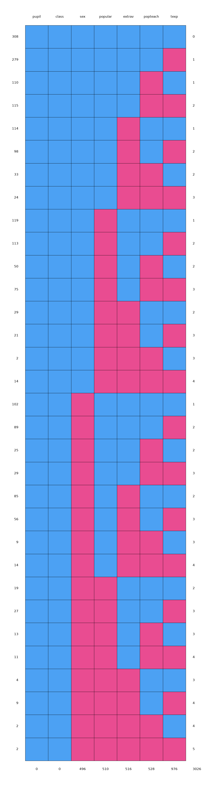
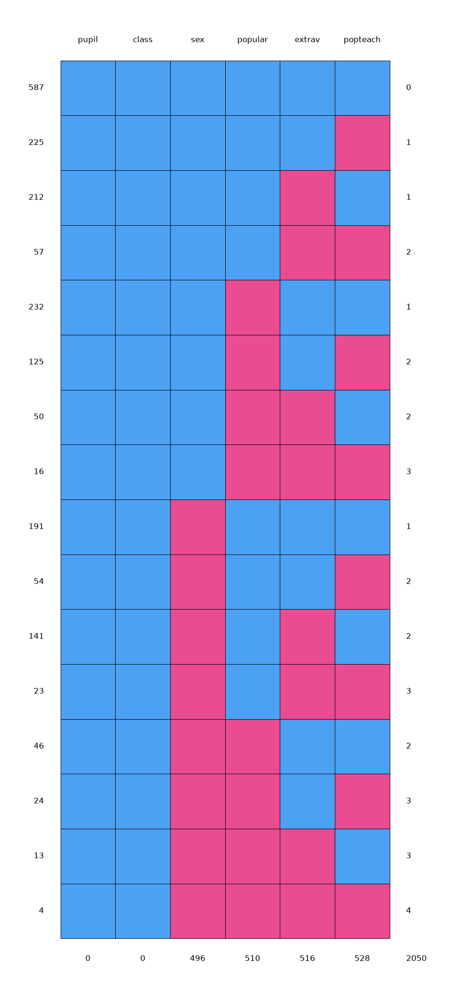
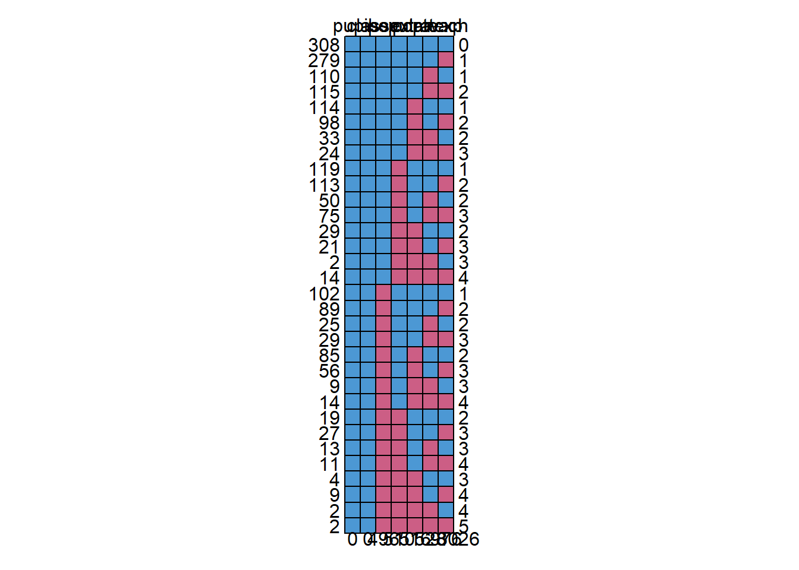
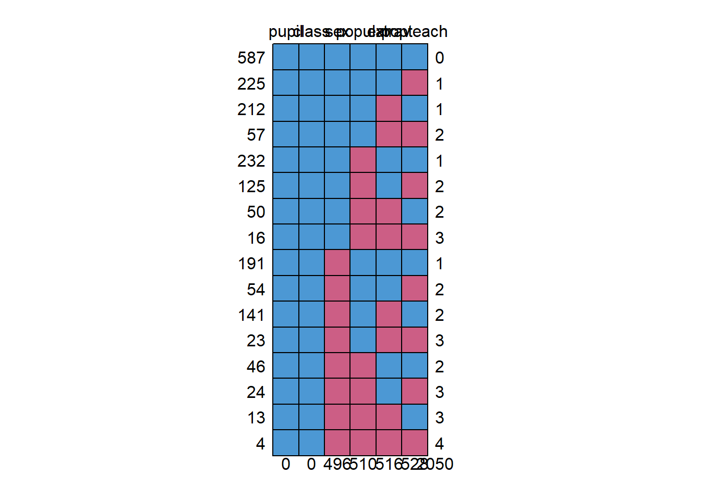
4. popular missingness vs popteach
In R the missingness indicator
is.na(popNCR$popular)
can be used to create a dummy variable for the missingness in popular. Alternatively, one can use the missingness indicator directly in a formula (as we will do below).
Does the missing data of popular depend on popteach? One could for example check this by making a histogram of popteach separately for the pupils with known popularity and missing popularity.
R code
is.na(popNCR$popular)R output
[1] FALSE FALSE FALSE FALSE TRUE FALSE FALSE TRUE TRUE FALSE FALSE FALSE
[13] FALSE TRUE FALSE FALSE FALSE FALSE FALSE FALSE TRUE FALSE FALSE FALSE
[25] FALSE TRUE TRUE FALSE FALSE FALSE FALSE FALSE FALSE FALSE FALSE FALSE
[37] TRUE FALSE FALSE FALSE FALSE TRUE FALSE FALSE FALSE FALSE FALSE FALSE
[49] FALSE FALSE TRUE FALSE FALSE FALSE FALSE FALSE FALSE FALSE FALSE FALSE
[61] FALSE FALSE FALSE TRUE TRUE TRUE FALSE FALSE FALSE TRUE FALSE FALSE
[73] FALSE TRUE TRUE FALSE FALSE FALSE FALSE TRUE TRUE FALSE FALSE FALSE
[85] FALSE FALSE TRUE FALSE FALSE FALSE TRUE TRUE FALSE FALSE FALSE FALSE
[97] FALSE FALSE TRUE FALSE TRUE FALSE TRUE FALSE FALSE FALSE FALSE FALSE
[109] FALSE FALSE FALSE FALSE FALSE TRUE TRUE TRUE FALSE FALSE FALSE TRUE
[121] FALSE TRUE FALSE FALSE FALSE FALSE FALSE FALSE FALSE FALSE FALSE FALSE
[133] TRUE FALSE FALSE FALSE FALSE FALSE FALSE FALSE FALSE FALSE TRUE FALSE
[145] FALSE FALSE FALSE FALSE FALSE FALSE FALSE FALSE FALSE FALSE FALSE FALSE
[157] TRUE FALSE FALSE FALSE FALSE FALSE FALSE FALSE FALSE FALSE FALSE FALSE
[169] TRUE FALSE FALSE FALSE FALSE FALSE FALSE TRUE FALSE FALSE FALSE FALSE
[181] FALSE TRUE FALSE FALSE TRUE FALSE FALSE FALSE FALSE FALSE FALSE FALSE
[193] TRUE TRUE TRUE FALSE FALSE FALSE FALSE FALSE TRUE FALSE TRUE FALSE
[205] FALSE FALSE TRUE FALSE FALSE FALSE TRUE FALSE FALSE FALSE TRUE FALSE
[217] TRUE FALSE FALSE FALSE FALSE FALSE FALSE FALSE FALSE FALSE FALSE FALSE
[229] FALSE FALSE FALSE FALSE TRUE FALSE FALSE FALSE FALSE FALSE FALSE FALSE
[241] FALSE FALSE FALSE FALSE TRUE FALSE FALSE FALSE FALSE FALSE TRUE TRUE
[253] TRUE FALSE FALSE FALSE TRUE FALSE FALSE FALSE TRUE FALSE FALSE TRUE
[265] FALSE FALSE FALSE FALSE FALSE FALSE FALSE FALSE FALSE FALSE FALSE TRUE
[277] TRUE TRUE FALSE FALSE FALSE FALSE FALSE FALSE FALSE FALSE FALSE TRUE
[289] FALSE FALSE FALSE FALSE TRUE TRUE FALSE TRUE FALSE TRUE FALSE TRUE
[301] TRUE TRUE FALSE FALSE FALSE FALSE FALSE FALSE TRUE FALSE FALSE FALSE
[313] FALSE FALSE FALSE FALSE FALSE TRUE FALSE FALSE FALSE FALSE FALSE FALSE
[325] FALSE FALSE FALSE TRUE FALSE FALSE TRUE FALSE TRUE TRUE FALSE FALSE
[337] FALSE FALSE FALSE TRUE TRUE FALSE FALSE FALSE FALSE FALSE FALSE FALSE
[349] FALSE FALSE TRUE TRUE FALSE TRUE FALSE FALSE FALSE TRUE TRUE FALSE
[361] FALSE FALSE FALSE TRUE FALSE TRUE TRUE TRUE FALSE FALSE FALSE TRUE
[373] FALSE FALSE TRUE FALSE FALSE FALSE FALSE FALSE FALSE TRUE FALSE FALSE
[385] FALSE FALSE FALSE TRUE FALSE FALSE FALSE FALSE FALSE TRUE FALSE FALSE
[397] FALSE FALSE FALSE TRUE FALSE FALSE TRUE FALSE FALSE FALSE FALSE FALSE
[409] FALSE TRUE FALSE TRUE FALSE FALSE FALSE FALSE FALSE FALSE FALSE FALSE
[421] FALSE TRUE FALSE FALSE FALSE TRUE FALSE TRUE TRUE FALSE TRUE FALSE
[433] FALSE FALSE FALSE FALSE FALSE FALSE TRUE FALSE FALSE FALSE TRUE FALSE
[445] FALSE FALSE TRUE TRUE TRUE TRUE TRUE TRUE TRUE TRUE FALSE TRUE
[457] TRUE FALSE FALSE TRUE FALSE FALSE TRUE FALSE FALSE FALSE TRUE FALSE
[469] FALSE FALSE FALSE FALSE TRUE FALSE TRUE FALSE FALSE FALSE FALSE FALSE
[481] FALSE TRUE TRUE TRUE FALSE FALSE FALSE FALSE FALSE FALSE FALSE FALSE
[493] FALSE FALSE FALSE FALSE TRUE TRUE FALSE TRUE FALSE FALSE FALSE FALSE
[505] FALSE FALSE FALSE FALSE FALSE FALSE FALSE FALSE TRUE FALSE TRUE TRUE
[517] FALSE FALSE TRUE FALSE FALSE TRUE FALSE FALSE TRUE FALSE FALSE FALSE
[529] FALSE FALSE FALSE FALSE TRUE FALSE FALSE FALSE FALSE FALSE FALSE FALSE
[541] FALSE FALSE FALSE FALSE FALSE TRUE FALSE FALSE FALSE FALSE FALSE TRUE
[553] FALSE FALSE TRUE FALSE FALSE FALSE FALSE TRUE FALSE FALSE FALSE FALSE
[565] TRUE TRUE FALSE FALSE FALSE FALSE FALSE TRUE TRUE FALSE FALSE TRUE
[577] FALSE FALSE FALSE FALSE TRUE FALSE TRUE FALSE TRUE FALSE FALSE FALSE
[589] TRUE FALSE TRUE FALSE TRUE FALSE FALSE FALSE FALSE TRUE FALSE FALSE
[601] FALSE TRUE FALSE FALSE FALSE FALSE FALSE FALSE FALSE FALSE TRUE TRUE
[613] FALSE TRUE FALSE FALSE FALSE FALSE FALSE FALSE FALSE FALSE FALSE FALSE
[625] FALSE FALSE FALSE TRUE FALSE FALSE TRUE FALSE FALSE FALSE FALSE FALSE
[637] FALSE FALSE TRUE FALSE FALSE FALSE FALSE TRUE FALSE TRUE FALSE FALSE
[649] TRUE FALSE FALSE TRUE FALSE TRUE FALSE TRUE FALSE FALSE TRUE TRUE
[661] TRUE TRUE FALSE TRUE TRUE TRUE FALSE FALSE TRUE TRUE TRUE FALSE
[673] FALSE FALSE FALSE FALSE FALSE FALSE FALSE FALSE FALSE FALSE TRUE FALSE
[685] TRUE FALSE FALSE TRUE FALSE FALSE FALSE FALSE FALSE FALSE TRUE TRUE
[697] TRUE TRUE TRUE TRUE FALSE FALSE FALSE FALSE TRUE FALSE TRUE FALSE
[709] TRUE TRUE FALSE FALSE FALSE FALSE FALSE FALSE FALSE FALSE TRUE FALSE
[721] FALSE TRUE TRUE FALSE FALSE FALSE TRUE FALSE TRUE FALSE TRUE FALSE
[733] FALSE FALSE FALSE FALSE FALSE TRUE TRUE TRUE FALSE FALSE TRUE FALSE
[745] FALSE FALSE TRUE FALSE FALSE TRUE FALSE FALSE FALSE FALSE FALSE FALSE
[757] FALSE FALSE FALSE FALSE FALSE FALSE TRUE FALSE TRUE FALSE TRUE FALSE
[769] FALSE FALSE FALSE FALSE FALSE FALSE TRUE FALSE FALSE FALSE FALSE TRUE
[781] FALSE FALSE FALSE FALSE FALSE FALSE FALSE TRUE FALSE TRUE FALSE TRUE
[793] TRUE TRUE FALSE TRUE FALSE FALSE TRUE FALSE FALSE FALSE TRUE FALSE
[805] FALSE FALSE FALSE FALSE FALSE FALSE FALSE TRUE FALSE FALSE FALSE FALSE
[817] FALSE FALSE TRUE FALSE FALSE FALSE FALSE TRUE FALSE FALSE FALSE FALSE
[829] FALSE FALSE FALSE TRUE FALSE FALSE FALSE FALSE FALSE FALSE FALSE FALSE
[841] TRUE FALSE FALSE FALSE TRUE FALSE FALSE TRUE FALSE FALSE FALSE FALSE
[853] FALSE TRUE FALSE TRUE FALSE TRUE TRUE FALSE FALSE FALSE TRUE FALSE
[865] FALSE FALSE FALSE FALSE FALSE FALSE FALSE FALSE FALSE FALSE TRUE TRUE
[877] FALSE FALSE FALSE FALSE FALSE FALSE FALSE FALSE FALSE FALSE FALSE TRUE
[889] TRUE TRUE TRUE FALSE FALSE FALSE FALSE FALSE FALSE FALSE FALSE FALSE
[901] TRUE FALSE FALSE FALSE FALSE FALSE TRUE FALSE FALSE FALSE TRUE TRUE
[913] FALSE FALSE FALSE TRUE FALSE TRUE FALSE FALSE FALSE FALSE FALSE FALSE
[925] FALSE FALSE TRUE FALSE TRUE TRUE TRUE FALSE TRUE FALSE FALSE TRUE
[937] FALSE FALSE TRUE TRUE FALSE TRUE FALSE FALSE FALSE FALSE FALSE FALSE
[949] FALSE TRUE FALSE TRUE TRUE FALSE TRUE FALSE FALSE FALSE FALSE FALSE
[961] FALSE TRUE FALSE FALSE FALSE FALSE FALSE TRUE FALSE FALSE FALSE FALSE
[973] FALSE FALSE FALSE FALSE FALSE TRUE FALSE TRUE FALSE FALSE FALSE TRUE
[985] FALSE TRUE TRUE FALSE FALSE FALSE FALSE FALSE TRUE FALSE FALSE FALSE
[997] TRUE TRUE FALSE TRUE FALSE TRUE FALSE TRUE FALSE FALSE FALSE FALSE
[1009] FALSE FALSE FALSE FALSE FALSE FALSE FALSE FALSE FALSE FALSE FALSE FALSE
[1021] FALSE FALSE FALSE FALSE FALSE FALSE FALSE FALSE FALSE FALSE TRUE FALSE
[1033] FALSE FALSE FALSE FALSE TRUE TRUE FALSE FALSE FALSE TRUE FALSE FALSE
[1045] TRUE TRUE FALSE TRUE TRUE FALSE TRUE TRUE FALSE FALSE TRUE FALSE
[1057] FALSE TRUE FALSE TRUE FALSE FALSE TRUE FALSE FALSE FALSE FALSE FALSE
[1069] FALSE TRUE FALSE FALSE FALSE FALSE FALSE FALSE FALSE FALSE TRUE FALSE
[1081] TRUE FALSE FALSE FALSE FALSE FALSE FALSE FALSE FALSE FALSE FALSE FALSE
[1093] FALSE FALSE FALSE FALSE FALSE TRUE TRUE FALSE FALSE FALSE FALSE FALSE
[1105] FALSE FALSE FALSE FALSE FALSE TRUE FALSE FALSE FALSE FALSE TRUE FALSE
[1117] FALSE FALSE FALSE FALSE FALSE FALSE FALSE FALSE FALSE FALSE FALSE TRUE
[1129] FALSE FALSE FALSE FALSE FALSE FALSE FALSE FALSE FALSE FALSE FALSE FALSE
[1141] FALSE FALSE TRUE FALSE FALSE TRUE FALSE TRUE TRUE TRUE FALSE FALSE
[1153] FALSE FALSE TRUE FALSE FALSE FALSE TRUE FALSE FALSE FALSE FALSE FALSE
[1165] FALSE FALSE FALSE FALSE FALSE FALSE FALSE FALSE TRUE FALSE TRUE FALSE
[1177] FALSE FALSE TRUE FALSE FALSE TRUE FALSE FALSE FALSE FALSE FALSE FALSE
[1189] FALSE FALSE FALSE TRUE FALSE FALSE FALSE FALSE FALSE FALSE FALSE FALSE
[1201] TRUE FALSE FALSE FALSE FALSE FALSE FALSE FALSE TRUE FALSE TRUE TRUE
[1213] FALSE FALSE FALSE TRUE FALSE FALSE FALSE TRUE FALSE FALSE FALSE FALSE
[1225] FALSE FALSE FALSE FALSE FALSE FALSE FALSE FALSE TRUE FALSE FALSE TRUE
[1237] FALSE FALSE FALSE FALSE FALSE FALSE FALSE FALSE FALSE FALSE TRUE FALSE
[1249] FALSE FALSE FALSE TRUE TRUE FALSE FALSE FALSE FALSE FALSE TRUE FALSE
[1261] FALSE FALSE FALSE TRUE TRUE TRUE TRUE TRUE TRUE TRUE TRUE FALSE
[1273] TRUE FALSE FALSE TRUE TRUE TRUE FALSE TRUE FALSE FALSE TRUE FALSE
[1285] FALSE TRUE TRUE FALSE FALSE FALSE FALSE TRUE FALSE TRUE FALSE FALSE
[1297] FALSE FALSE FALSE TRUE TRUE FALSE TRUE TRUE FALSE TRUE FALSE FALSE
[1309] FALSE TRUE TRUE FALSE FALSE FALSE FALSE TRUE FALSE TRUE FALSE FALSE
[1321] FALSE TRUE FALSE FALSE FALSE TRUE TRUE FALSE FALSE FALSE FALSE TRUE
[1333] TRUE TRUE FALSE TRUE FALSE TRUE FALSE FALSE TRUE TRUE TRUE TRUE
[1345] FALSE TRUE TRUE FALSE FALSE FALSE FALSE FALSE FALSE TRUE FALSE FALSE
[1357] FALSE TRUE TRUE TRUE FALSE TRUE FALSE FALSE FALSE FALSE FALSE FALSE
[1369] FALSE TRUE FALSE FALSE FALSE FALSE FALSE TRUE TRUE FALSE TRUE FALSE
[1381] FALSE FALSE TRUE TRUE TRUE TRUE FALSE FALSE FALSE FALSE TRUE FALSE
[1393] FALSE TRUE FALSE FALSE TRUE TRUE FALSE FALSE FALSE TRUE FALSE FALSE
[1405] TRUE FALSE FALSE FALSE FALSE TRUE FALSE TRUE TRUE TRUE FALSE FALSE
[1417] FALSE FALSE FALSE FALSE FALSE FALSE FALSE FALSE FALSE TRUE TRUE FALSE
[1429] TRUE FALSE FALSE FALSE TRUE FALSE FALSE FALSE FALSE FALSE TRUE FALSE
[1441] TRUE FALSE TRUE FALSE TRUE TRUE FALSE FALSE FALSE FALSE FALSE FALSE
[1453] TRUE FALSE FALSE FALSE FALSE FALSE FALSE FALSE FALSE TRUE FALSE FALSE
[1465] FALSE FALSE TRUE TRUE TRUE FALSE FALSE FALSE FALSE TRUE TRUE FALSE
[1477] TRUE FALSE TRUE TRUE TRUE FALSE FALSE TRUE FALSE FALSE FALSE FALSE
[1489] FALSE TRUE FALSE TRUE FALSE TRUE FALSE FALSE FALSE FALSE FALSE FALSE
[1501] TRUE TRUE TRUE FALSE FALSE TRUE FALSE FALSE FALSE FALSE FALSE FALSE
[1513] FALSE TRUE TRUE FALSE FALSE FALSE FALSE TRUE FALSE FALSE TRUE FALSE
[1525] FALSE FALSE FALSE FALSE FALSE FALSE FALSE FALSE FALSE FALSE FALSE TRUE
[1537] TRUE FALSE FALSE FALSE FALSE FALSE FALSE FALSE FALSE FALSE FALSE FALSE
[1549] TRUE TRUE FALSE FALSE TRUE TRUE TRUE TRUE FALSE FALSE FALSE TRUE
[1561] FALSE TRUE FALSE FALSE TRUE FALSE FALSE FALSE TRUE FALSE FALSE TRUE
[1573] FALSE TRUE FALSE FALSE FALSE FALSE TRUE FALSE FALSE FALSE FALSE FALSE
[1585] FALSE FALSE FALSE FALSE FALSE FALSE FALSE TRUE FALSE FALSE FALSE FALSE
[1597] FALSE FALSE FALSE FALSE FALSE FALSE FALSE FALSE FALSE TRUE FALSE FALSE
[1609] FALSE TRUE TRUE FALSE FALSE FALSE FALSE FALSE FALSE FALSE FALSE FALSE
[1621] FALSE FALSE FALSE FALSE FALSE FALSE FALSE FALSE FALSE FALSE TRUE FALSE
[1633] FALSE FALSE FALSE FALSE FALSE FALSE FALSE FALSE FALSE FALSE FALSE FALSE
[1645] FALSE TRUE TRUE FALSE FALSE TRUE TRUE TRUE FALSE FALSE TRUE TRUE
[1657] FALSE TRUE FALSE TRUE FALSE TRUE TRUE FALSE TRUE TRUE TRUE FALSE
[1669] TRUE FALSE TRUE TRUE FALSE TRUE FALSE FALSE TRUE TRUE TRUE FALSE
[1681] FALSE FALSE TRUE TRUE FALSE TRUE TRUE FALSE FALSE TRUE FALSE FALSE
[1693] FALSE FALSE FALSE FALSE FALSE FALSE FALSE FALSE FALSE TRUE TRUE FALSE
[1705] FALSE TRUE FALSE FALSE FALSE TRUE TRUE TRUE FALSE FALSE FALSE FALSE
[1717] FALSE FALSE FALSE TRUE TRUE FALSE TRUE FALSE TRUE FALSE FALSE FALSE
[1729] FALSE TRUE FALSE FALSE FALSE FALSE FALSE FALSE FALSE FALSE FALSE FALSE
[1741] FALSE FALSE FALSE TRUE FALSE FALSE FALSE FALSE FALSE FALSE FALSE TRUE
[1753] FALSE FALSE FALSE TRUE FALSE FALSE FALSE FALSE FALSE FALSE TRUE FALSE
[1765] FALSE FALSE TRUE FALSE FALSE FALSE FALSE TRUE FALSE FALSE FALSE FALSE
[1777] FALSE FALSE TRUE TRUE FALSE FALSE FALSE FALSE TRUE FALSE TRUE TRUE
[1789] TRUE FALSE FALSE TRUE FALSE TRUE TRUE FALSE FALSE FALSE TRUE TRUE
[1801] TRUE FALSE FALSE FALSE FALSE FALSE FALSE FALSE FALSE TRUE FALSE FALSE
[1813] FALSE FALSE FALSE FALSE TRUE FALSE FALSE FALSE TRUE FALSE FALSE FALSE
[1825] FALSE FALSE FALSE FALSE TRUE FALSE FALSE FALSE FALSE FALSE FALSE FALSE
[1837] FALSE FALSE FALSE FALSE FALSE FALSE FALSE TRUE FALSE FALSE FALSE TRUE
[1849] FALSE FALSE FALSE TRUE FALSE FALSE TRUE FALSE FALSE FALSE FALSE FALSE
[1861] FALSE FALSE TRUE FALSE FALSE FALSE FALSE FALSE FALSE FALSE FALSE FALSE
[1873] FALSE FALSE FALSE FALSE FALSE FALSE FALSE FALSE FALSE FALSE FALSE FALSE
[1885] FALSE TRUE FALSE FALSE TRUE TRUE FALSE FALSE TRUE FALSE TRUE TRUE
[1897] FALSE FALSE FALSE FALSE FALSE FALSE FALSE TRUE TRUE TRUE TRUE FALSE
[1909] FALSE FALSE FALSE FALSE TRUE FALSE TRUE TRUE FALSE FALSE FALSE FALSE
[1921] TRUE FALSE FALSE FALSE FALSE FALSE FALSE FALSE FALSE FALSE FALSE FALSE
[1933] TRUE FALSE FALSE FALSE TRUE FALSE TRUE FALSE FALSE FALSE FALSE FALSE
[1945] FALSE FALSE TRUE TRUE TRUE FALSE FALSE TRUE TRUE FALSE FALSE TRUE
[1957] FALSE TRUE FALSE TRUE FALSE FALSE FALSE FALSE TRUE FALSE TRUE FALSE
[1969] FALSE FALSE TRUE FALSE FALSE FALSE FALSE FALSE FALSE TRUE FALSE FALSE
[1981] FALSE FALSE FALSE FALSE FALSE FALSE FALSE FALSE FALSE FALSE FALSE TRUE
[1993] FALSE FALSE FALSE TRUE FALSE TRUE FALSE FALSEPython code
print(format_bool_vector_r(pop_miss, max_lines=None, width=12))Console output (click to expand)
```text [1] FALSE FALSE FALSE FALSE TRUE FALSE FALSE TRUE TRUE FALSE FALSE FALSE [13] FALSE TRUE FALSE FALSE FALSE FALSE FALSE FALSE TRUE FALSE FALSE FALSE [25] FALSE TRUE TRUE FALSE FALSE FALSE FALSE FALSE FALSE FALSE FALSE FALSE [37] TRUE FALSE FALSE FALSE FALSE TRUE FALSE FALSE FALSE FALSE FALSE FALSE [49] FALSE FALSE TRUE FALSE FALSE FALSE FALSE FALSE FALSE FALSE FALSE FALSE [61] FALSE FALSE FALSE TRUE TRUE TRUE FALSE FALSE FALSE TRUE FALSE FALSE [73] FALSE TRUE TRUE FALSE FALSE FALSE FALSE TRUE TRUE FALSE FALSE FALSE [85] FALSE FALSE TRUE FALSE FALSE FALSE TRUE TRUE FALSE FALSE FALSE FALSE [97] FALSE FALSE TRUE FALSE TRUE FALSE TRUE FALSE FALSE FALSE FALSE FALSE [109] FALSE FALSE FALSE FALSE FALSE TRUE TRUE TRUE FALSE FALSE FALSE TRUE [121] FALSE TRUE FALSE FALSE FALSE FALSE FALSE FALSE FALSE FALSE FALSE FALSE [133] TRUE FALSE FALSE FALSE FALSE FALSE FALSE FALSE FALSE FALSE TRUE FALSE [145] FALSE FALSE FALSE FALSE FALSE FALSE FALSE FALSE FALSE FALSE FALSE FALSE [157] TRUE FALSE FALSE FALSE FALSE FALSE FALSE FALSE FALSE FALSE FALSE FALSE [169] TRUE FALSE FALSE FALSE FALSE FALSE FALSE TRUE FALSE FALSE FALSE FALSE [181] FALSE TRUE FALSE FALSE TRUE FALSE FALSE FALSE FALSE FALSE FALSE FALSE [193] TRUE TRUE TRUE FALSE FALSE FALSE FALSE FALSE TRUE FALSE TRUE FALSE [205] FALSE FALSE TRUE FALSE FALSE FALSE TRUE FALSE FALSE FALSE TRUE FALSE [217] TRUE FALSE FALSE FALSE FALSE FALSE FALSE FALSE FALSE FALSE FALSE FALSE [229] FALSE FALSE FALSE FALSE TRUE FALSE FALSE FALSE FALSE FALSE FALSE FALSE [241] FALSE FALSE FALSE FALSE TRUE FALSE FALSE FALSE FALSE FALSE TRUE TRUE [253] TRUE FALSE FALSE FALSE TRUE FALSE FALSE FALSE TRUE FALSE FALSE TRUE [265] FALSE FALSE FALSE FALSE FALSE FALSE FALSE FALSE FALSE FALSE FALSE TRUE [277] TRUE TRUE FALSE FALSE FALSE FALSE FALSE FALSE FALSE FALSE FALSE TRUE [289] FALSE FALSE FALSE FALSE TRUE TRUE FALSE TRUE FALSE TRUE FALSE TRUE [301] TRUE TRUE FALSE FALSE FALSE FALSE FALSE FALSE TRUE FALSE FALSE FALSE [313] FALSE FALSE FALSE FALSE FALSE TRUE FALSE FALSE FALSE FALSE FALSE FALSE [325] FALSE FALSE FALSE TRUE FALSE FALSE TRUE FALSE TRUE TRUE FALSE FALSE [337] FALSE FALSE FALSE TRUE TRUE FALSE FALSE FALSE FALSE FALSE FALSE FALSE [349] FALSE FALSE TRUE TRUE FALSE TRUE FALSE FALSE FALSE TRUE TRUE FALSE [361] FALSE FALSE FALSE TRUE FALSE TRUE TRUE TRUE FALSE FALSE FALSE TRUE [373] FALSE FALSE TRUE FALSE FALSE FALSE FALSE FALSE FALSE TRUE FALSE FALSE [385] FALSE FALSE FALSE TRUE FALSE FALSE FALSE FALSE FALSE TRUE FALSE FALSE [397] FALSE FALSE FALSE TRUE FALSE FALSE TRUE FALSE FALSE FALSE FALSE FALSE [409] FALSE TRUE FALSE TRUE FALSE FALSE FALSE FALSE FALSE FALSE FALSE FALSE [421] FALSE TRUE FALSE FALSE FALSE TRUE FALSE TRUE TRUE FALSE TRUE FALSE [433] FALSE FALSE FALSE FALSE FALSE FALSE TRUE FALSE FALSE FALSE TRUE FALSE [445] FALSE FALSE TRUE TRUE TRUE TRUE TRUE TRUE TRUE TRUE FALSE TRUE [457] TRUE FALSE FALSE TRUE FALSE FALSE TRUE FALSE FALSE FALSE TRUE FALSE [469] FALSE FALSE FALSE FALSE TRUE FALSE TRUE FALSE FALSE FALSE FALSE FALSE [481] FALSE TRUE TRUE TRUE FALSE FALSE FALSE FALSE FALSE FALSE FALSE FALSE [493] FALSE FALSE FALSE FALSE TRUE TRUE FALSE TRUE FALSE FALSE FALSE FALSE [505] FALSE FALSE FALSE FALSE FALSE FALSE FALSE FALSE TRUE FALSE TRUE TRUE [517] FALSE FALSE TRUE FALSE FALSE TRUE FALSE FALSE TRUE FALSE FALSE FALSE [529] FALSE FALSE FALSE FALSE TRUE FALSE FALSE FALSE FALSE FALSE FALSE FALSE [541] FALSE FALSE FALSE FALSE FALSE TRUE FALSE FALSE FALSE FALSE FALSE TRUE [553] FALSE FALSE TRUE FALSE FALSE FALSE FALSE TRUE FALSE FALSE FALSE FALSE [565] TRUE TRUE FALSE FALSE FALSE FALSE FALSE TRUE TRUE FALSE FALSE TRUE [577] FALSE FALSE FALSE FALSE TRUE FALSE TRUE FALSE TRUE FALSE FALSE FALSE [589] TRUE FALSE TRUE FALSE TRUE FALSE FALSE FALSE FALSE TRUE FALSE FALSE [601] FALSE TRUE FALSE FALSE FALSE FALSE FALSE FALSE FALSE FALSE TRUE TRUE [613] FALSE TRUE FALSE FALSE FALSE FALSE FALSE FALSE FALSE FALSE FALSE FALSE [625] FALSE FALSE FALSE TRUE FALSE FALSE TRUE FALSE FALSE FALSE FALSE FALSE [637] FALSE FALSE TRUE FALSE FALSE FALSE FALSE TRUE FALSE TRUE FALSE FALSE [649] TRUE FALSE FALSE TRUE FALSE TRUE FALSE TRUE FALSE FALSE TRUE TRUE [661] TRUE TRUE FALSE TRUE TRUE TRUE FALSE FALSE TRUE TRUE TRUE FALSE [673] FALSE FALSE FALSE FALSE FALSE FALSE FALSE FALSE FALSE FALSE TRUE FALSE [685] TRUE FALSE FALSE TRUE FALSE FALSE FALSE FALSE FALSE FALSE TRUE TRUE [697] TRUE TRUE TRUE TRUE FALSE FALSE FALSE FALSE TRUE FALSE TRUE FALSE [709] TRUE TRUE FALSE FALSE FALSE FALSE FALSE FALSE FALSE FALSE TRUE FALSE [721] FALSE TRUE TRUE FALSE FALSE FALSE TRUE FALSE TRUE FALSE TRUE FALSE [733] FALSE FALSE FALSE FALSE FALSE TRUE TRUE TRUE FALSE FALSE TRUE FALSE [745] FALSE FALSE TRUE FALSE FALSE TRUE FALSE FALSE FALSE FALSE FALSE FALSE [757] FALSE FALSE FALSE FALSE FALSE FALSE TRUE FALSE TRUE FALSE TRUE FALSE [769] FALSE FALSE FALSE FALSE FALSE FALSE TRUE FALSE FALSE FALSE FALSE TRUE [781] FALSE FALSE FALSE FALSE FALSE FALSE FALSE TRUE FALSE TRUE FALSE TRUE [793] TRUE TRUE FALSE TRUE FALSE FALSE TRUE FALSE FALSE FALSE TRUE FALSE [805] FALSE FALSE FALSE FALSE FALSE FALSE FALSE TRUE FALSE FALSE FALSE FALSE [817] FALSE FALSE TRUE FALSE FALSE FALSE FALSE TRUE FALSE FALSE FALSE FALSE [829] FALSE FALSE FALSE TRUE FALSE FALSE FALSE FALSE FALSE FALSE FALSE FALSE [841] TRUE FALSE FALSE FALSE TRUE FALSE FALSE TRUE FALSE FALSE FALSE FALSE [853] FALSE TRUE FALSE TRUE FALSE TRUE TRUE FALSE FALSE FALSE TRUE FALSE [865] FALSE FALSE FALSE FALSE FALSE FALSE FALSE FALSE FALSE FALSE TRUE TRUE [877] FALSE FALSE FALSE FALSE FALSE FALSE FALSE FALSE FALSE FALSE FALSE TRUE [889] TRUE TRUE TRUE FALSE FALSE FALSE FALSE FALSE FALSE FALSE FALSE FALSE [901] TRUE FALSE FALSE FALSE FALSE FALSE TRUE FALSE FALSE FALSE TRUE TRUE [913] FALSE FALSE FALSE TRUE FALSE TRUE FALSE FALSE FALSE FALSE FALSE FALSE [925] FALSE FALSE TRUE FALSE TRUE TRUE TRUE FALSE TRUE FALSE FALSE TRUE [937] FALSE FALSE TRUE TRUE FALSE TRUE FALSE FALSE FALSE FALSE FALSE FALSE [949] FALSE TRUE FALSE TRUE TRUE FALSE TRUE FALSE FALSE FALSE FALSE FALSE [961] FALSE TRUE FALSE FALSE FALSE FALSE FALSE TRUE FALSE FALSE FALSE FALSE [973] FALSE FALSE FALSE FALSE FALSE TRUE FALSE TRUE FALSE FALSE FALSE TRUE [985] FALSE TRUE TRUE FALSE FALSE FALSE FALSE FALSE TRUE FALSE FALSE FALSE [997] TRUE TRUE FALSE TRUE FALSE TRUE FALSE TRUE FALSE FALSE FALSE FALSE [1009] FALSE FALSE FALSE FALSE FALSE FALSE FALSE FALSE FALSE FALSE FALSE FALSE [1021] FALSE FALSE FALSE FALSE FALSE FALSE FALSE FALSE FALSE FALSE TRUE FALSE [1033] FALSE FALSE FALSE FALSE TRUE TRUE FALSE FALSE FALSE TRUE FALSE FALSE [1045] TRUE TRUE FALSE TRUE TRUE FALSE TRUE TRUE FALSE FALSE TRUE FALSE [1057] FALSE TRUE FALSE TRUE FALSE FALSE TRUE FALSE FALSE FALSE FALSE FALSE [1069] FALSE TRUE FALSE FALSE FALSE FALSE FALSE FALSE FALSE FALSE TRUE FALSE [1081] TRUE FALSE FALSE FALSE FALSE FALSE FALSE FALSE FALSE FALSE FALSE FALSE [1093] FALSE FALSE FALSE FALSE FALSE TRUE TRUE FALSE FALSE FALSE FALSE FALSE [1105] FALSE FALSE FALSE FALSE FALSE TRUE FALSE FALSE FALSE FALSE TRUE FALSE [1117] FALSE FALSE FALSE FALSE FALSE FALSE FALSE FALSE FALSE FALSE FALSE TRUE [1129] FALSE FALSE FALSE FALSE FALSE FALSE FALSE FALSE FALSE FALSE FALSE FALSE [1141] FALSE FALSE TRUE FALSE FALSE TRUE FALSE TRUE TRUE TRUE FALSE FALSE [1153] FALSE FALSE TRUE FALSE FALSE FALSE TRUE FALSE FALSE FALSE FALSE FALSE [1165] FALSE FALSE FALSE FALSE FALSE FALSE FALSE FALSE TRUE FALSE TRUE FALSE [1177] FALSE FALSE TRUE FALSE FALSE TRUE FALSE FALSE FALSE FALSE FALSE FALSE [1189] FALSE FALSE FALSE TRUE FALSE FALSE FALSE FALSE FALSE FALSE FALSE FALSE [1201] TRUE FALSE FALSE FALSE FALSE FALSE FALSE FALSE TRUE FALSE TRUE TRUE [1213] FALSE FALSE FALSE TRUE FALSE FALSE FALSE TRUE FALSE FALSE FALSE FALSE [1225] FALSE FALSE FALSE FALSE FALSE FALSE FALSE FALSE TRUE FALSE FALSE TRUE [1237] FALSE FALSE FALSE FALSE FALSE FALSE FALSE FALSE FALSE FALSE TRUE FALSE [1249] FALSE FALSE FALSE TRUE TRUE FALSE FALSE FALSE FALSE FALSE TRUE FALSE [1261] FALSE FALSE FALSE TRUE TRUE TRUE TRUE TRUE TRUE TRUE TRUE FALSE [1273] TRUE FALSE FALSE TRUE TRUE TRUE FALSE TRUE FALSE FALSE TRUE FALSE [1285] FALSE TRUE TRUE FALSE FALSE FALSE FALSE TRUE FALSE TRUE FALSE FALSE [1297] FALSE FALSE FALSE TRUE TRUE FALSE TRUE TRUE FALSE TRUE FALSE FALSE [1309] FALSE TRUE TRUE FALSE FALSE FALSE FALSE TRUE FALSE TRUE FALSE FALSE [1321] FALSE TRUE FALSE FALSE FALSE TRUE TRUE FALSE FALSE FALSE FALSE TRUE [1333] TRUE TRUE FALSE TRUE FALSE TRUE FALSE FALSE TRUE TRUE TRUE TRUE [1345] FALSE TRUE TRUE FALSE FALSE FALSE FALSE FALSE FALSE TRUE FALSE FALSE [1357] FALSE TRUE TRUE TRUE FALSE TRUE FALSE FALSE FALSE FALSE FALSE FALSE [1369] FALSE TRUE FALSE FALSE FALSE FALSE FALSE TRUE TRUE FALSE TRUE FALSE [1381] FALSE FALSE TRUE TRUE TRUE TRUE FALSE FALSE FALSE FALSE TRUE FALSE [1393] FALSE TRUE FALSE FALSE TRUE TRUE FALSE FALSE FALSE TRUE FALSE FALSE [1405] TRUE FALSE FALSE FALSE FALSE TRUE FALSE TRUE TRUE TRUE FALSE FALSE [1417] FALSE FALSE FALSE FALSE FALSE FALSE FALSE FALSE FALSE TRUE TRUE FALSE [1429] TRUE FALSE FALSE FALSE TRUE FALSE FALSE FALSE FALSE FALSE TRUE FALSE [1441] TRUE FALSE TRUE FALSE TRUE TRUE FALSE FALSE FALSE FALSE FALSE FALSE [1453] TRUE FALSE FALSE FALSE FALSE FALSE FALSE FALSE FALSE TRUE FALSE FALSE [1465] FALSE FALSE TRUE TRUE TRUE FALSE FALSE FALSE FALSE TRUE TRUE FALSE [1477] TRUE FALSE TRUE TRUE TRUE FALSE FALSE TRUE FALSE FALSE FALSE FALSE [1489] FALSE TRUE FALSE TRUE FALSE TRUE FALSE FALSE FALSE FALSE FALSE FALSE [1501] TRUE TRUE TRUE FALSE FALSE TRUE FALSE FALSE FALSE FALSE FALSE FALSE [1513] FALSE TRUE TRUE FALSE FALSE FALSE FALSE TRUE FALSE FALSE TRUE FALSE [1525] FALSE FALSE FALSE FALSE FALSE FALSE FALSE FALSE FALSE FALSE FALSE TRUE [1537] TRUE FALSE FALSE FALSE FALSE FALSE FALSE FALSE FALSE FALSE FALSE FALSE [1549] TRUE TRUE FALSE FALSE TRUE TRUE TRUE TRUE FALSE FALSE FALSE TRUE [1561] FALSE TRUE FALSE FALSE TRUE FALSE FALSE FALSE TRUE FALSE FALSE TRUE [1573] FALSE TRUE FALSE FALSE FALSE FALSE TRUE FALSE FALSE FALSE FALSE FALSE [1585] FALSE FALSE FALSE FALSE FALSE FALSE FALSE TRUE FALSE FALSE FALSE FALSE [1597] FALSE FALSE FALSE FALSE FALSE FALSE FALSE FALSE FALSE TRUE FALSE FALSE [1609] FALSE TRUE TRUE FALSE FALSE FALSE FALSE FALSE FALSE FALSE FALSE FALSE [1621] FALSE FALSE FALSE FALSE FALSE FALSE FALSE FALSE FALSE FALSE TRUE FALSE [1633] FALSE FALSE FALSE FALSE FALSE FALSE FALSE FALSE FALSE FALSE FALSE FALSE [1645] FALSE TRUE TRUE FALSE FALSE TRUE TRUE TRUE FALSE FALSE TRUE TRUE [1657] FALSE TRUE FALSE TRUE FALSE TRUE TRUE FALSE TRUE TRUE TRUE FALSE [1669] TRUE FALSE TRUE TRUE FALSE TRUE FALSE FALSE TRUE TRUE TRUE FALSE [1681] FALSE FALSE TRUE TRUE FALSE TRUE TRUE FALSE FALSE TRUE FALSE FALSE [1693] FALSE FALSE FALSE FALSE FALSE FALSE FALSE FALSE FALSE TRUE TRUE FALSE [1705] FALSE TRUE FALSE FALSE FALSE TRUE TRUE TRUE FALSE FALSE FALSE FALSE [1717] FALSE FALSE FALSE TRUE TRUE FALSE TRUE FALSE TRUE FALSE FALSE FALSE [1729] FALSE TRUE FALSE FALSE FALSE FALSE FALSE FALSE FALSE FALSE FALSE FALSE [1741] FALSE FALSE FALSE TRUE FALSE FALSE FALSE FALSE FALSE FALSE FALSE TRUE [1753] FALSE FALSE FALSE TRUE FALSE FALSE FALSE FALSE FALSE FALSE TRUE FALSE [1765] FALSE FALSE TRUE FALSE FALSE FALSE FALSE TRUE FALSE FALSE FALSE FALSE [1777] FALSE FALSE TRUE TRUE FALSE FALSE FALSE FALSE TRUE FALSE TRUE TRUE [1789] TRUE FALSE FALSE TRUE FALSE TRUE TRUE FALSE FALSE FALSE TRUE TRUE [1801] TRUE FALSE FALSE FALSE FALSE FALSE FALSE FALSE FALSE TRUE FALSE FALSE [1813] FALSE FALSE FALSE FALSE TRUE FALSE FALSE FALSE TRUE FALSE FALSE FALSE [1825] FALSE FALSE FALSE FALSE TRUE FALSE FALSE FALSE FALSE FALSE FALSE FALSE [1837] FALSE FALSE FALSE FALSE FALSE FALSE FALSE TRUE FALSE FALSE FALSE TRUE [1849] FALSE FALSE FALSE TRUE FALSE FALSE TRUE FALSE FALSE FALSE FALSE FALSE [1861] FALSE FALSE TRUE FALSE FALSE FALSE FALSE FALSE FALSE FALSE FALSE FALSE [1873] FALSE FALSE FALSE FALSE FALSE FALSE FALSE FALSE FALSE FALSE FALSE FALSE [1885] FALSE TRUE FALSE FALSE TRUE TRUE FALSE FALSE TRUE FALSE TRUE TRUE [1897] FALSE FALSE FALSE FALSE FALSE FALSE FALSE TRUE TRUE TRUE TRUE FALSE [1909] FALSE FALSE FALSE FALSE TRUE FALSE TRUE TRUE FALSE FALSE FALSE FALSE [1921] TRUE FALSE FALSE FALSE FALSE FALSE FALSE FALSE FALSE FALSE FALSE FALSE [1933] TRUE FALSE FALSE FALSE TRUE FALSE TRUE FALSE FALSE FALSE FALSE FALSE [1945] FALSE FALSE TRUE TRUE TRUE FALSE FALSE TRUE TRUE FALSE FALSE TRUE [1957] FALSE TRUE FALSE TRUE FALSE FALSE FALSE FALSE TRUE FALSE TRUE FALSE [1969] FALSE FALSE TRUE FALSE FALSE FALSE FALSE FALSE FALSE TRUE FALSE FALSE [1981] FALSE FALSE FALSE FALSE FALSE FALSE FALSE FALSE FALSE FALSE FALSE TRUE [1993] FALSE FALSE FALSE TRUE FALSE TRUE FALSE FALSE ```Note: Matplotlib equivalent of the R lattice plot.
plot_histogram(data, names, 'popteach', condition=pop_miss)(plot below)Compare to R reference
histogram(~ popteach | is.na(popular), data=popNCR)The histogram shows that the missingness in popular is not equally distributed across popteach. The missingness in popular is right-tailed.
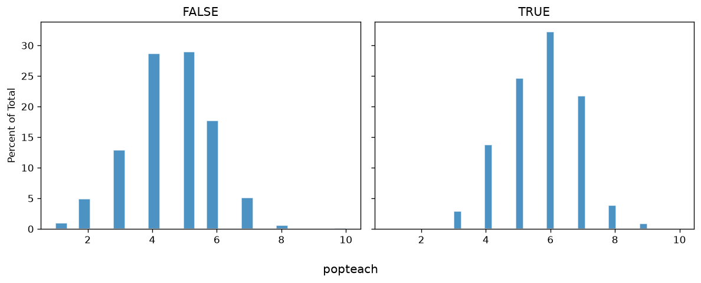
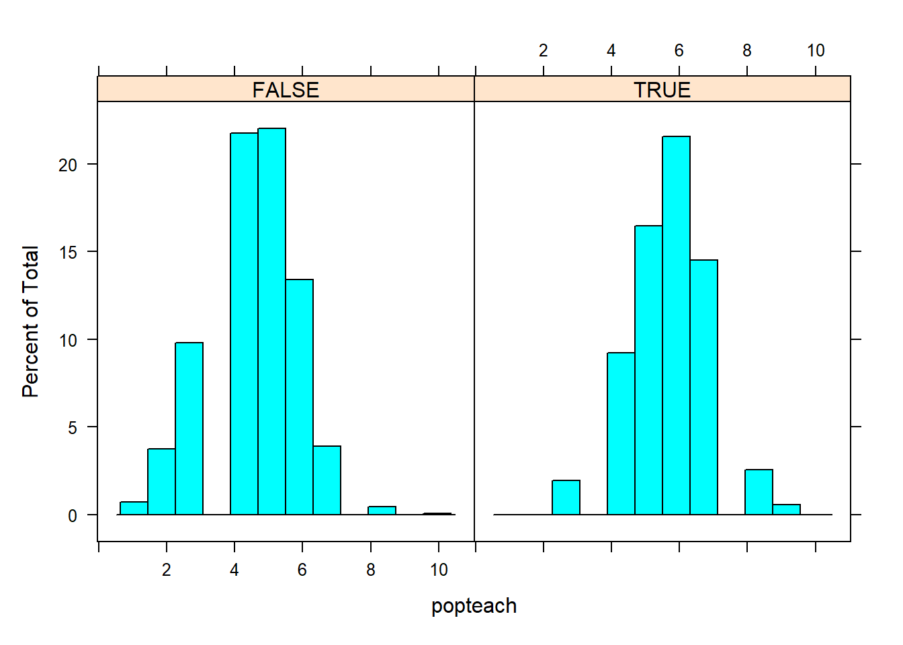
5. Other missingness vs popteach
Note: Matplotlib equivalent of the R lattice plot.
plot_histogram(data, names, 'popteach', condition=np.isnan(data[:, names.index('sex')]))(plot below)Compare to R reference
histogram(~ popteach | is.na(sex), data = popNCR)Note: Matplotlib equivalent of the R lattice plot.
plot_histogram(data, names, 'popteach', condition=np.isnan(data[:, names.index('extrav')]))(plot below)Compare to R reference
histogram(~ popteach | is.na(extrav), data = popNCR)Note: Matplotlib equivalent of the R lattice plot.
plot_histogram(data, names, 'popteach', condition=np.isnan(data[:, texp_i]))(plot below)Compare to R reference
histogram(~ popteach | is.na(texp), data = popNCR)There seems to be a left-tailed relation between popteach and the missingness in sex.
There also seems to be a left-tailed relation between popteach and the missingness in extrav.
There seems to be no observable relation between popteach and the missingness in texp. It might be MCAR or even MNAR.
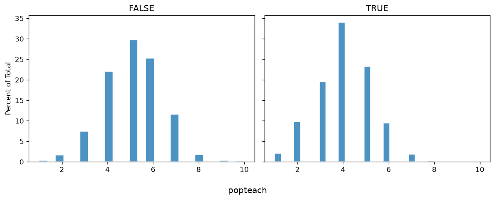
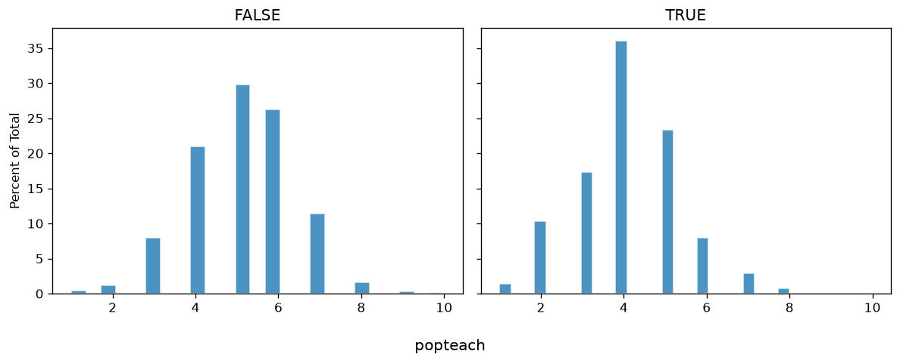
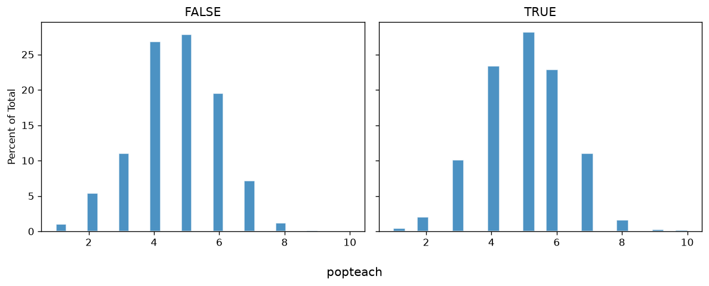
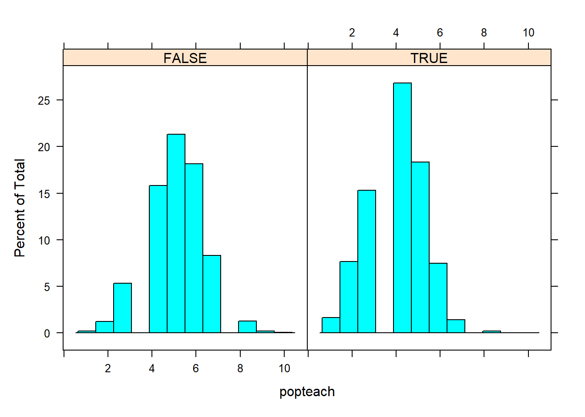
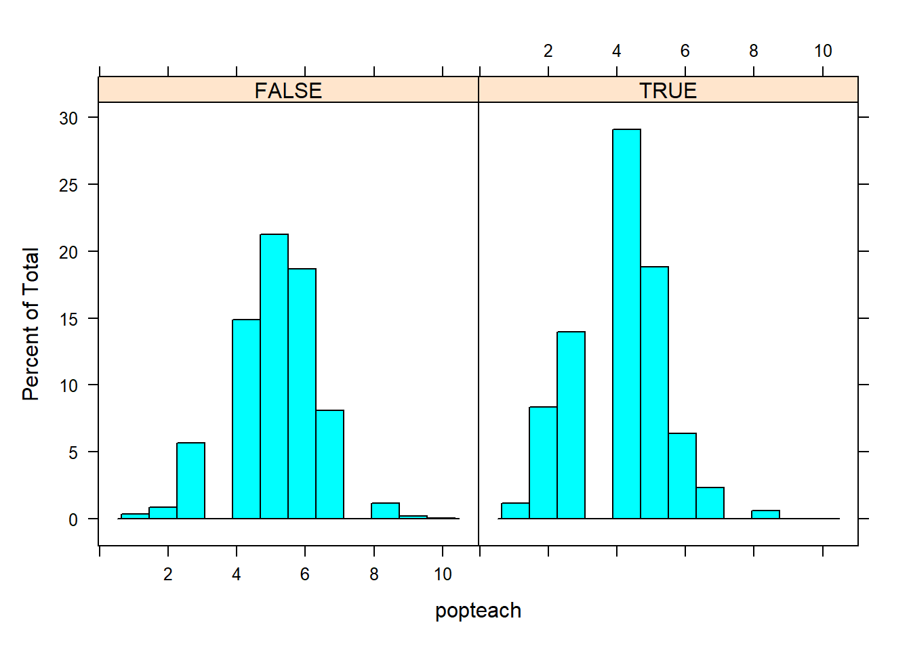
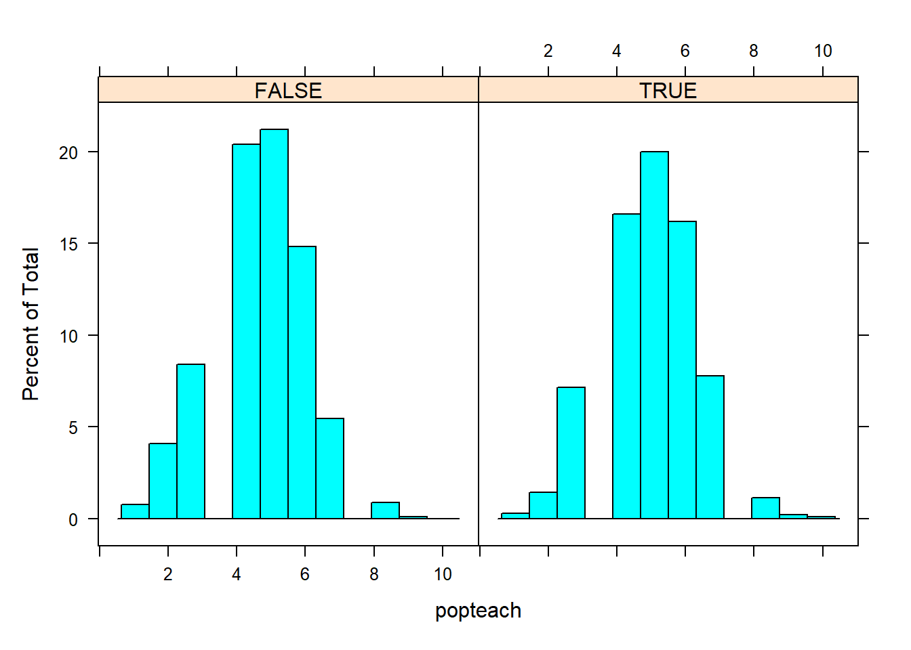
6. popteach missingness vs popular
Note: Matplotlib equivalent of the R lattice plot.
plot_histogram(data, names, 'popular', condition=np.isnan(data[:, names.index('popteach')]))(plot below)Compare to R reference
histogram(~ popular | is.na(popteach), data = popNCR)Yes: there is a dependency. The relation seems to be right-tailed.
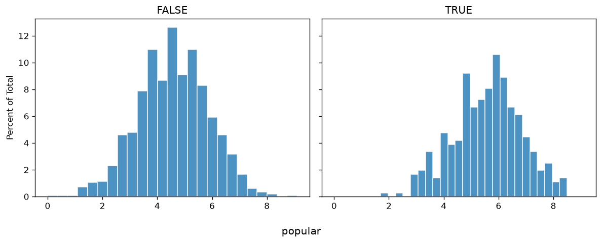
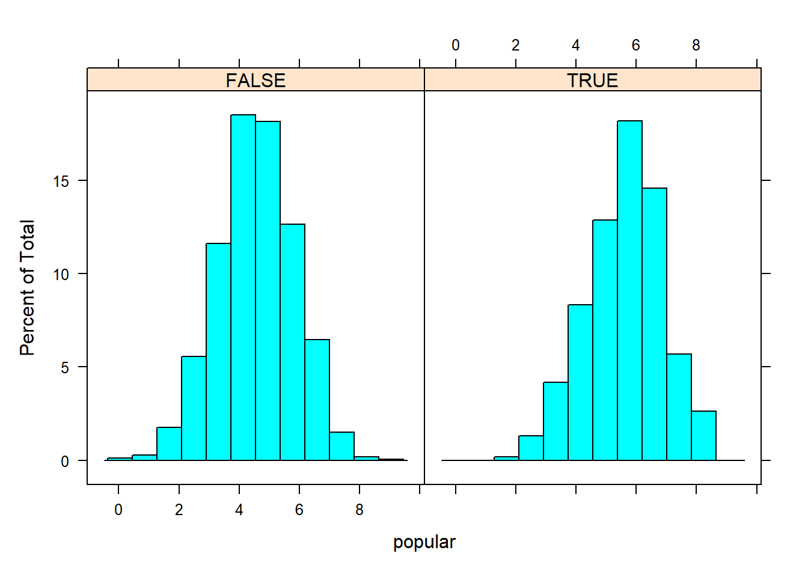
7. ICC for incomplete variables
print(f'[1] {obs_icc[0]:.7f}')[1] 0.3280070Compare to R reference
icc(aov(popular ~ as.factor(class), data = popNCR))[1] 0.328007print(f'[1] {obs_icc[1]:.7f}')[1] 0.3138658Compare to R reference
icc(aov(popteach ~ class, data = popNCR))[1] 0.3138658print(f'[1] {obs_icc[2]:.7f}')[1] 1.0000000Compare to R reference
icc(aov(texp ~ class, data = popNCR))[1] 1Please note that the function icc() comes from the package multilevel (function ICC1()), but is included in the workspace popular.RData. Write down the ICCs, you'll need them later.
7b. Do you think it is necessary to take the multilevel structure into account?
YES! There is a strong cluster structure going on. If we ignore the clustering in our imputation model, we may run into invalid inference. To stay as close to the true data model, we must take the cluster structure into account during imputation.
8. norm imputation imp1 (no class)
ini = mice(data, column_names=names, maxit=0, print_flag=False)
print(format_meth_r(names, ini.method, style='popncr')) pupil class extrav sex texp popular popteach
"" "" "pmm" "logreg" "pmm" "pmm" "pmm"Compare to R reference
ini <- mice(popNCR, maxit = 0)
meth <- ini$meth
methpupil class extrav sex texp popular popteach
"" "" "pmm" "logreg" "pmm" "pmm" "pmm"meth = dict(ini.method)
for v in ("extrav", "texp", "popular", "popteach"):
meth[v] = "norm"
print(format_meth_r(names, meth, style='popncr')) pupil class extrav sex texp popular popteach
"" "" "norm" "logreg" "norm" "norm" "norm"Compare to R reference
meth[c(3, 5, 6, 7)] <- "norm"
methpupil class extrav sex texp popular popteach
"" "" "norm" "logreg" "norm" "norm" "norm"print(format_predictor_matrix(names, ini.predictor_matrix, style='popncr'))pupil class extrav sex texp popular popteach
pupil 0 1 1 1 1 1 1
class 1 0 1 1 1 1 1
extrav 1 1 0 1 1 1 1
sex 1 1 1 0 1 1 1
texp 1 1 1 1 0 1 1
popular 1 1 1 1 1 0 1
popteach 1 1 1 1 1 1 0Compare to R reference
pred <- ini$pred
predpupil class extrav sex texp popular popteach
pupil 0 1 1 1 1 1 1
class 1 0 1 1 1 1 1
extrav 1 1 0 1 1 1 1
sex 1 1 1 0 1 1 1
texp 1 1 1 1 0 1 1
popular 1 1 1 1 1 0 1
popteach 1 1 1 1 1 1 0pred_nc = pred_no_class.copy()
print(format_predictor_matrix(names, pred_nc, style='popncr'))pupil class extrav sex texp popular popteach
pupil 0 0 1 1 1 1 1
class 0 0 1 1 1 1 1
extrav 0 0 0 1 1 1 1
sex 0 0 1 0 1 1 1
texp 0 0 1 1 0 1 1
popular 0 0 1 1 1 0 1
popteach 0 0 1 1 1 1 0Compare to R reference
pred[, "class"] <- 0
pred[, "pupil"] <- 0
predpupil class extrav sex texp popular popteach
pupil 0 0 1 1 1 1 1
class 0 0 1 1 1 1 1
extrav 0 0 0 1 1 1 1
sex 0 0 1 0 1 1 1
texp 0 0 1 1 0 1 1
popular 0 0 1 1 1 0 1
popteach 0 0 1 1 1 1 0Note: Creates imp1 mids object.
imp1 = mice(data, column_names=names, method=meth, predictor_matrix=pred_no_class, m=5, maxit=5, print_flag=False)(imp1 created — no console output)Compare to R reference
imp1 <- mice(popNCR, meth = meth, pred = pred, print = FALSE)9. Compare imputed vs incomplete means
Note: Imputed norm summaries within atol=0.2 (session chain; sex counts may differ by 1).
print(format_summary_popncr_r(complete(imp1, 1), names, imputed=True)) pupil class extrav sex texp
Min. : 1.00 17 : 26 Min. : 0.9852 0: 975 Min. : -9.751
1st Qu.: 6.00 63 : 25 1st Qu.: 4.0635 1: 1025 1st Qu.: 8.000
Median : 11.00 10 : 24 Median : 5.0000 Median : 12.296
Mean : 10.65 15 : 24 Mean : 5.2332 Mean : 12.534
3rd Qu.: 16.00 4 : 23 3rd Qu.: 6.0000 3rd Qu.: 16.993
Max. : 26.00 21 : 23 Max. : 10.0000 Max. : 31.529
(Other):1855
popular popteach
Min. :0.000 Min. : 1.00
1st Qu.:4.100 1st Qu.: 4.00
Median :5.000 Median : 5.00
Mean :5.007 Mean : 5.01
3rd Qu.:5.979 3rd Qu.: 6.00
Max. :9.100 Max. :10.00Compare to R reference
summary(complete(imp1)) pupil class extrav sex texp
Min. : 1.00 17 : 26 Min. : 0.9849 0: 974 Min. :-9.794
1st Qu.: 6.00 63 : 25 1st Qu.: 4.0620 1:1026 1st Qu.: 8.000
Median :11.00 10 : 24 Median : 5.0000 Median :12.297
Mean :10.65 15 : 24 Mean : 5.2335 Mean :12.533
3rd Qu.:16.00 4 : 23 3rd Qu.: 6.0000 3rd Qu.:17.000
Max. :26.00 21 : 23 Max. :10.0000 Max. :31.556
(Other):1855
popular popteach
Min. :0.000 Min. : 1.00
1st Qu.:4.100 1st Qu.: 4.00
Median :5.000 Median : 5.00
Mean :5.007 Mean : 5.01
3rd Qu.:5.979 3rd Qu.: 6.00
Max. :9.100 Max. :10.00 print(format_summary_popncr_r(data, names))pupil class extrav sex texp
Min. : 1.00 17 : 26 Min. : 1.000 0 :661 Min. : 2.0
1st Qu.: 6.00 63 : 25 1st Qu.: 4.000 1 :843 1st Qu.: 7.0
Median :11.00 10 : 24 Median : 5.000 NA's:496 Median : 12.0
Mean :10.65 15 : 24 Mean : 5.313 Mean : 11.8
3rd Qu.:16.00 4 : 23 3rd Qu.: 6.000 3rd Qu.: 16.0
Max. :26.00 21 : 23 Max. :10.000 Max. : 25.0
(Other):1855 NA's : 516 NA's : 976
popular popteach
Min. :0.000 Min. : 1.000
1st Qu.:3.900 1st Qu.: 4.000
Median :4.800 Median : 5.000
Mean :4.829 Mean : 4.834
3rd Qu.:5.800 3rd Qu.: 6.000
Max. :9.100 Max. :10.000
NA's :510 NA's :528Compare to R reference
summary(popNCR)pupil class extrav sex texp
Min. : 1.00 17 : 26 Min. : 1.000 0 :661 Min. : 2.0
1st Qu.: 6.00 63 : 25 1st Qu.: 4.000 1 :843 1st Qu.: 7.0
Median :11.00 10 : 24 Median : 5.000 NA's:496 Median :12.0
Mean :10.65 15 : 24 Mean : 5.313 Mean :11.8
3rd Qu.:16.00 4 : 23 3rd Qu.: 6.000 3rd Qu.:16.0
Max. :26.00 21 : 23 Max. :10.000 Max. :25.0
(Other):1855 NA's :516 NA's :976
popular popteach
Min. :0.000 Min. : 1.000
1st Qu.:3.900 1st Qu.: 4.000
Median :4.800 Median : 5.000
Mean :4.829 Mean : 4.834
3rd Qu.:5.800 3rd Qu.: 6.000
Max. :9.100 Max. :10.000
NA's :510 NA's :5289b. The missingness in `texp` is MNAR: higher values for `texp` have a larger probability to be missing. Can you see this in the imputed data? Do you think this is a problem?
Yes, we can see this in the imputed data: teacher experience increases slightly after imputation. However, texp is the same for all pupils in a class. But not all pupils have this information recorded (as if some pupils did not remember, or were not present during data collection). This is not a problem, because as long as at least one pupil in each class has teacher experience recorded, we can deductively impute the correct (i.e. true) value for every pupil in the class.
10. ICC comparison imp1
print(format_icc_table_r(list(ICC_VARS), {'observed': obs_icc, 'norm': imp1_icc}))vars observed norm
1 popular 0.3280070 0.2793921
2 popteach 0.3138658 0.2448333
3 texp 1.0000000 0.4129791Compare to R reference
data.frame(vars = names(popNCR[c(6, 7, 5)]),
observed = c(icc(aov(popular ~ class, popNCR)),
icc(aov(popteach ~ class, popNCR)),
icc(aov(texp ~ class, popNCR))),
norm = c(icc(aov(popular ~ class, complete(imp1))),
icc(aov(popteach ~ class, complete(imp1))),
icc(aov(texp ~ class, complete(imp1)))))vars observed norm
1 popular 0.3280070 0.2793921
2 popteach 0.3138658 0.2448333
3 texp 1.0000000 0.412979111. norm imputation imp2 (with class)
pred = ini.predictor_matrix.copy()
pred[:, names.index('pupil')] = 0
imp2 = mice(data, column_names=names, method=meth, predictor_matrix=pred, m=5, maxit=5, print_flag=False)
print(format_logged_events_warning_r(len(imp2.logged_events)))Warning: Number of logged events: 90Compare to R reference
pred <- ini$pred
pred[, "pupil"] <- 0
imp2 <- mice(popNCR, meth = meth, pred = pred, print = FALSE)Warning: Number of logged events: 9012. ICC comparison imp2 (normclass)
print(format_icc_table_r(list(ICC_VARS), {'observed': obs_icc, 'norm': imp1_icc, 'normclass': imp2_icc}))vars observed norm normclass
1 popular 0.3280070 0.2793921 0.3531436
2 popteach 0.3138658 0.2448333 0.3394816
3 texp 1.0000000 0.4129791 1.0000000Compare to R reference
data.frame(vars = names(popNCR[c(6, 7, 5)]),
observed = c(icc(aov(popular ~ class, popNCR)),
icc(aov(popteach ~ class, popNCR)),
icc(aov(texp ~ class, popNCR))),
norm = c(icc(aov(popular ~ class, complete(imp1))),
icc(aov(popteach ~ class, complete(imp1))),
icc(aov(texp ~ class, complete(imp1)))),
normclass = c(icc(aov(popular ~ class, complete(imp2))),
icc(aov(popteach ~ class, complete(imp2))),
icc(aov(texp ~ class, complete(imp2)))))vars observed norm normclass
1 popular 0.3280070 0.2793921 0.3531436
2 popteach 0.3138658 0.2448333 0.3394816
3 texp 1.0000000 0.4129791 1.0000000By simply forcing the algorithm to use the class variable during estimation we adopt a fixed effects approach. This conforms to formulating seperate regression models for each class and imputing within classes from these models.
Checking Convergence of the imputations
13. Convergence trace imp2
Note: Matplotlib equivalent of the R lattice plot.
plot_mids(imp2, variables=['popular', 'texp', 'popteach'])(plot below)Compare to R reference
plot(imp2, c("popular", "texp", "popteach"))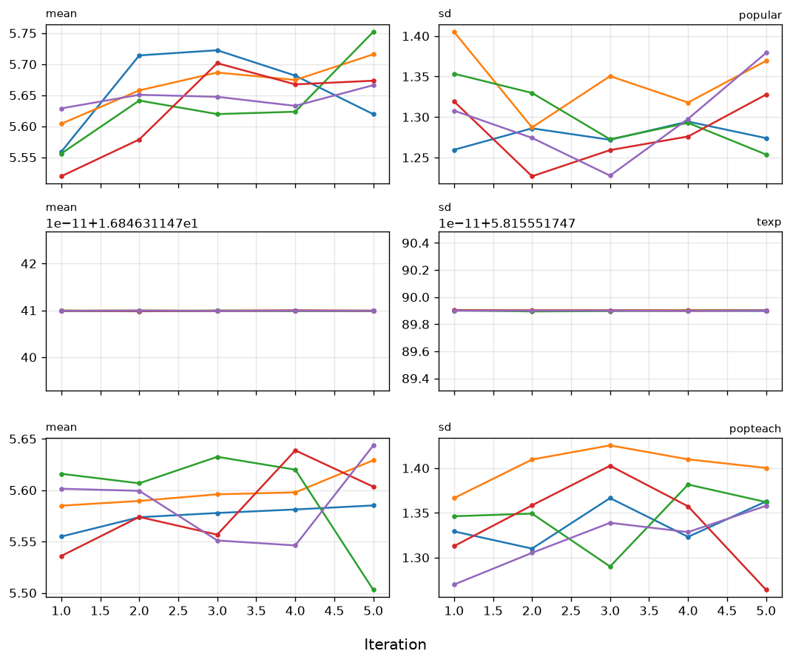
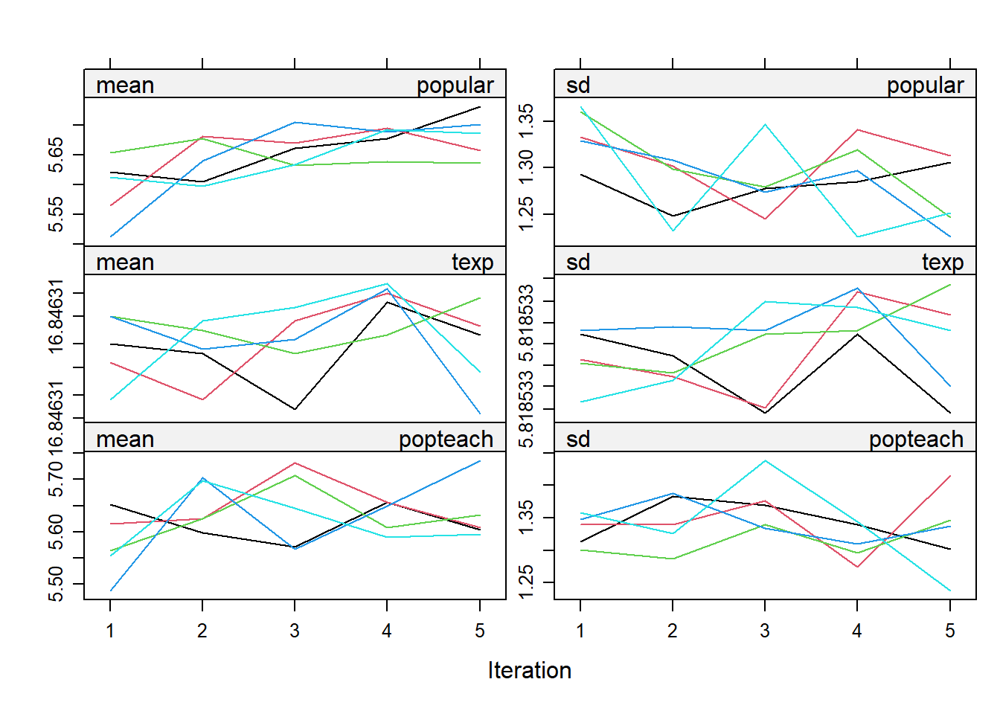
14. Extended trace imp3
Note: Warm-started via continue_imputation (R mice.mids).
imp3 = continue_imputation(imp2, maxit=10, print=False)
plot_mids(imp3, variables=['popular', 'texp', 'popteach'])(plot below)Compare to R reference
imp3 <- mice.mids(imp2, maxit = 10)
plot(imp3, c(...))Note: Second continue_imputation extension (35 iterations total).
imp3b = continue_imputation(imp3, maxit=20, print=False)
plot_mids(imp3b, variables=['popular', 'texp', 'popteach'])(plot below)Compare to R reference
imp3b <- mice.mids(imp3, maxit = 20, print = FALSE)
plot(imp3b, c("popular", "texp", "popteach"))It seems OK. Adding another 20 iterations confirms this.
Further inspection
Several plotting methods based on the package lattice for Trellis graphics are implemented in mice for imputed data.
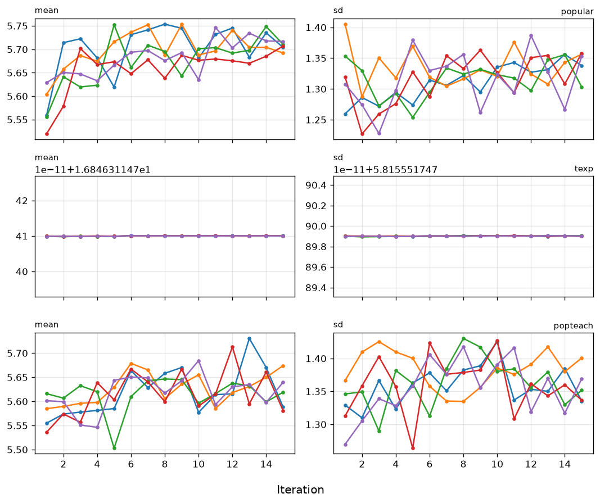
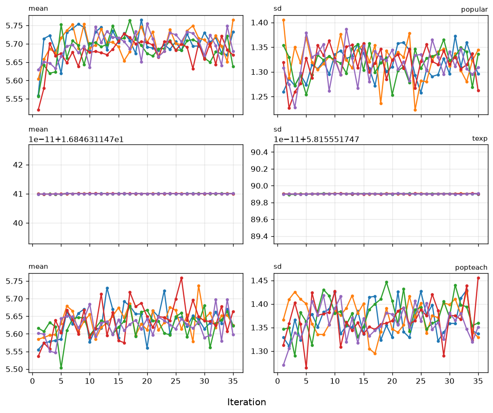
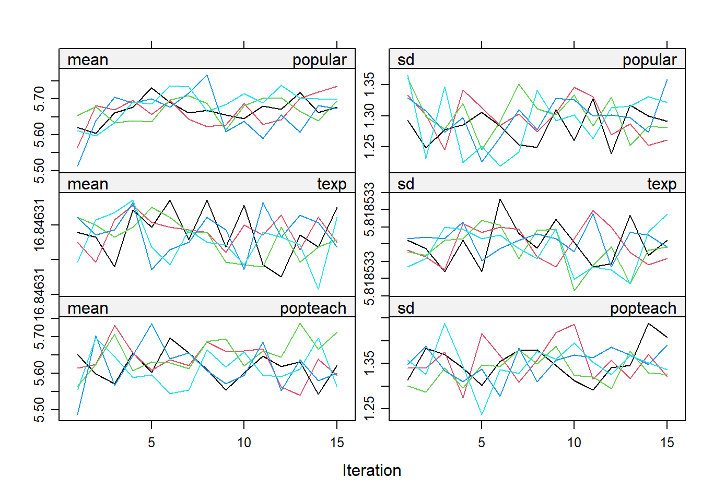
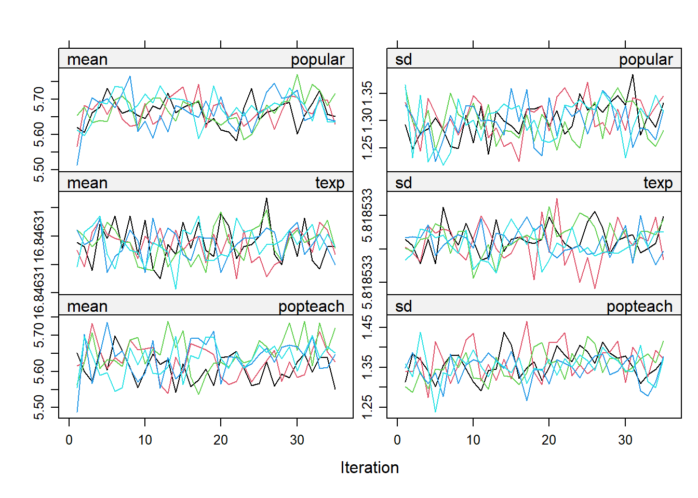
15. Density plots imp2
To obtain all densities of the different imputed datasets use
densityplot(imp2)
To obtain just the densities for popular one can use
densityplot(imp2, ~ popular)
or
Note: Matplotlib equivalent of the R lattice plot.
plot_density_grid(imp2)(plot below)Compare to R reference
densityplot(imp2)Note: Matplotlib equivalent of the R lattice plot.
plot_density(imp2, 'popular')(plot below)Compare to R reference
densityplot(imp2, ~ popular)Note: Matplotlib equivalent of the R lattice plot.
plot_density_by_imp(imp2, 'popular')(plot below)Compare to R reference
densityplot(imp2, ~ popular | .imp)The latter case results in a conditional plot (conditional on the different imputed datasets).
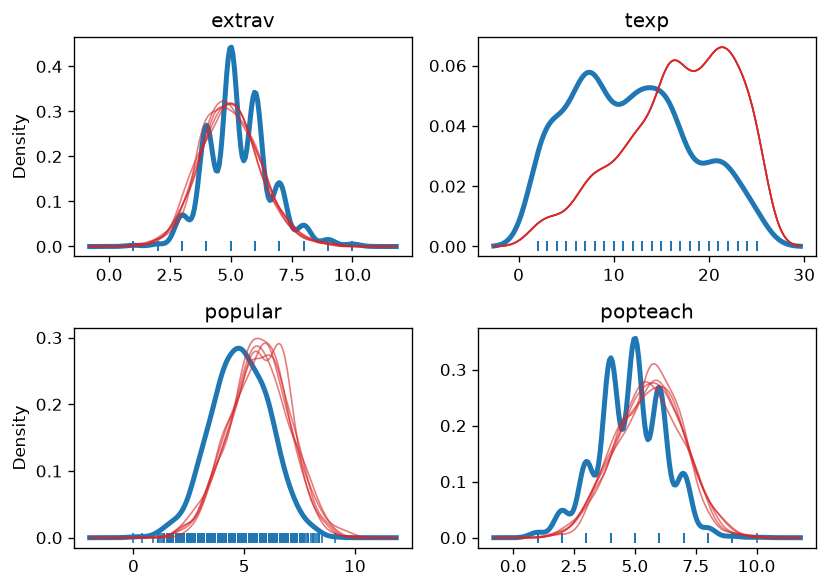
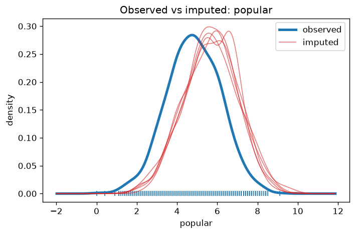
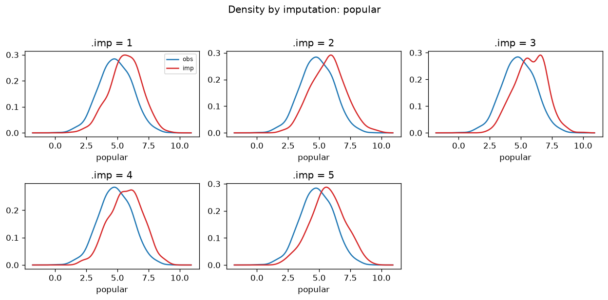
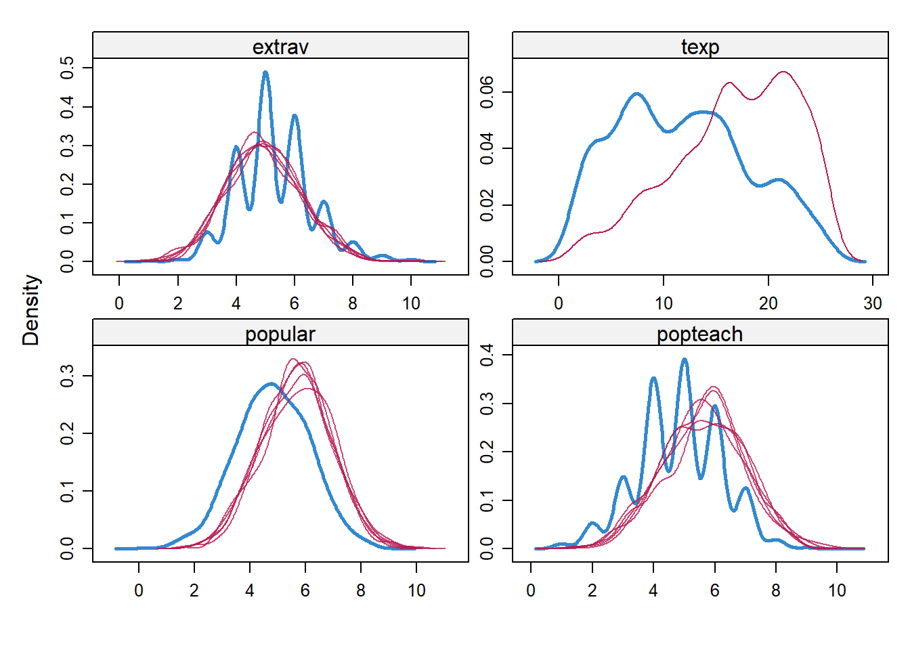
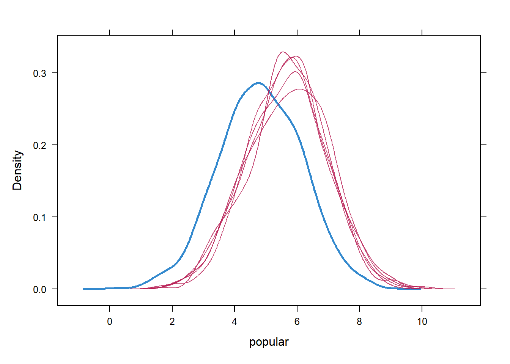
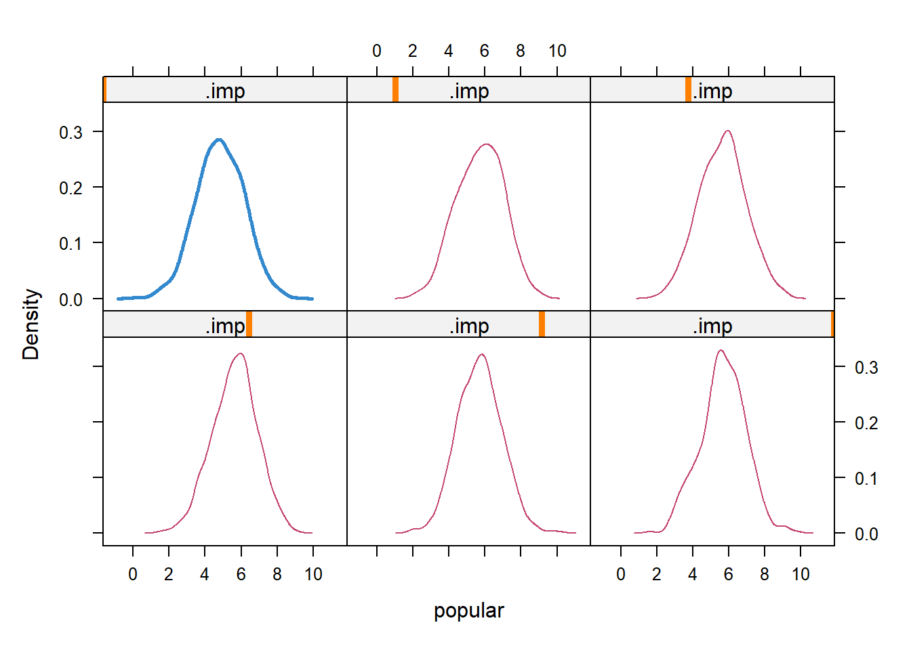
16. First 15 imputed rows
print(format_popncr_head_r(complete(imp2, 1), names, n=15)) pupil class extrav sex texp popular popteach
1 1 1 5.000000 1 24 6.300000 3.701142
2 2 1 6.176860 0 24 4.900000 3.256136
3 3 1 4.000000 1 24 5.300000 6.000000
4 4 1 3.000000 1 24 4.700000 5.000000
5 5 1 5.000000 1 24 6.587591 6.000000
6 6 1 2.827225 0 24 4.700000 5.000000
7 7 1 5.000000 0 24 5.900000 5.000000
8 8 1 4.000000 0 24 3.459736 2.846141
9 9 1 5.000000 0 24 5.692711 5.000000
10 10 1 5.000000 0 24 3.900000 3.000000
11 11 1 4.643219 1 24 5.700000 5.000000
12 12 1 5.000000 1 24 4.800000 5.000000
13 13 1 5.000000 0 24 5.000000 5.000000
14 14 1 5.000000 1 24 6.174869 6.000000
15 15 1 5.000000 1 24 6.000000 5.000000Compare to R reference
head(complete(imp2, 1), n = 15) pupil class extrav sex texp popular popteach
1 1 1 5.000000 1 24 6.300000 3.701142
2 2 1 6.176860 0 24 4.900000 3.256136
3 3 1 4.000000 1 24 5.300000 6.000000
4 4 1 3.000000 1 24 4.700000 5.000000
5 5 1 5.000000 1 24 6.587591 6.000000
6 6 1 2.827225 0 24 4.700000 5.000000
7 7 1 5.000000 0 24 5.900000 5.000000
8 8 1 4.000000 0 24 3.459736 2.846141
9 9 1 5.000000 0 24 5.692711 5.000000
10 10 1 5.000000 0 24 3.900000 3.000000
11 11 1 4.643219 1 24 5.700000 5.000000
12 12 1 5.000000 1 24 4.800000 5.000000
13 13 1 5.000000 0 24 5.000000 5.000000
14 14 1 5.000000 1 24 6.174869 6.000000
15 15 1 5.000000 1 24 6.000000 5.000000What do you think of the imputed values?
17. PMM imputation imp4
imp4 = mice(data, column_names=names, m=5, maxit=5, print_flag=False)
print(format_mice_iter_log(
imp4.m, imp4.iteration, imp4.visit_sequence,
imputed_vars=['extrav', 'sex', 'texp', 'popular', 'popteach'],
warning=format_logged_events_warning_r(len(imp4.logged_events)),
)) iter imp variable
1 1 extrav sex texp popular popteach
1 2 extrav sex texp popular popteach
1 3 extrav sex texp popular popteach
1 4 extrav sex texp popular popteach
1 5 extrav sex texp popular popteach
2 1 extrav sex texp popular popteach
2 2 extrav sex texp popular popteach
2 3 extrav sex texp popular popteach
2 4 extrav sex texp popular popteach
2 5 extrav sex texp popular popteach
3 1 extrav sex texp popular popteach
3 2 extrav sex texp popular popteach
3 3 extrav sex texp popular popteach
3 4 extrav sex texp popular popteach
3 5 extrav sex texp popular popteach
4 1 extrav sex texp popular popteach
4 2 extrav sex texp popular popteach
4 3 extrav sex texp popular popteach
4 4 extrav sex texp popular popteach
4 5 extrav sex texp popular popteach
5 1 extrav sex texp popular popteach
5 2 extrav sex texp popular popteach
5 3 extrav sex texp popular popteach
5 4 extrav sex texp popular popteach
5 5 extrav sex texp popular popteach
Warning: Number of logged events: 90Compare to R reference
imp4 <- mice(popNCR)iter imp variable
1 1 extrav sex texp popular popteach
1 2 extrav sex texp popular popteach
1 3 extrav sex texp popular popteach
1 4 extrav sex texp popular popteach
1 5 extrav sex texp popular popteach
2 1 extrav sex texp popular popteach
2 2 extrav sex texp popular popteach
2 3 extrav sex texp popular popteach
2 4 extrav sex texp popular popteach
2 5 extrav sex texp popular popteach
3 1 extrav sex texp popular popteach
3 2 extrav sex texp popular popteach
3 3 extrav sex texp popular popteach
3 4 extrav sex texp popular popteach
3 5 extrav sex texp popular popteach
4 1 extrav sex texp popular popteach
4 2 extrav sex texp popular popteach
4 3 extrav sex texp popular popteach
4 4 extrav sex texp popular popteach
4 5 extrav sex texp popular popteach
5 1 extrav sex texp popular popteach
5 2 extrav sex texp popular popteach
5 3 extrav sex texp popular popteach
5 4 extrav sex texp popular popteach
5 5 extrav sex texp popular popteach
Warning: Number of logged events: 9018. Density plots imp4
Note: Matplotlib equivalent of the R lattice plot.
plot_density_grid(imp4)(plot below)Compare to R reference
densityplot(imp4)Yes, pmm samples from the observed values and this clearly shows: imputations follow the shape of the observed data.
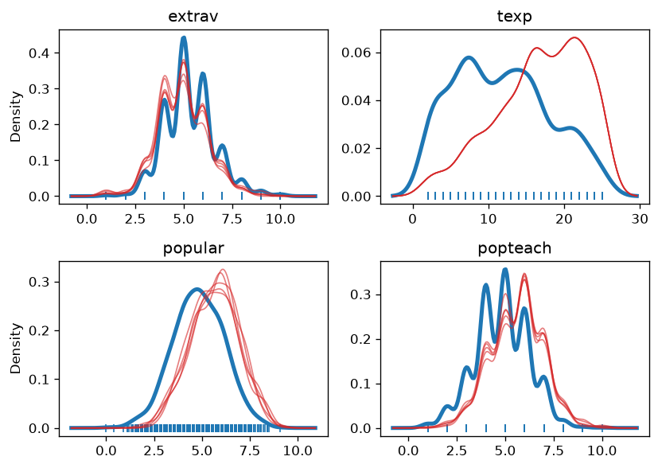
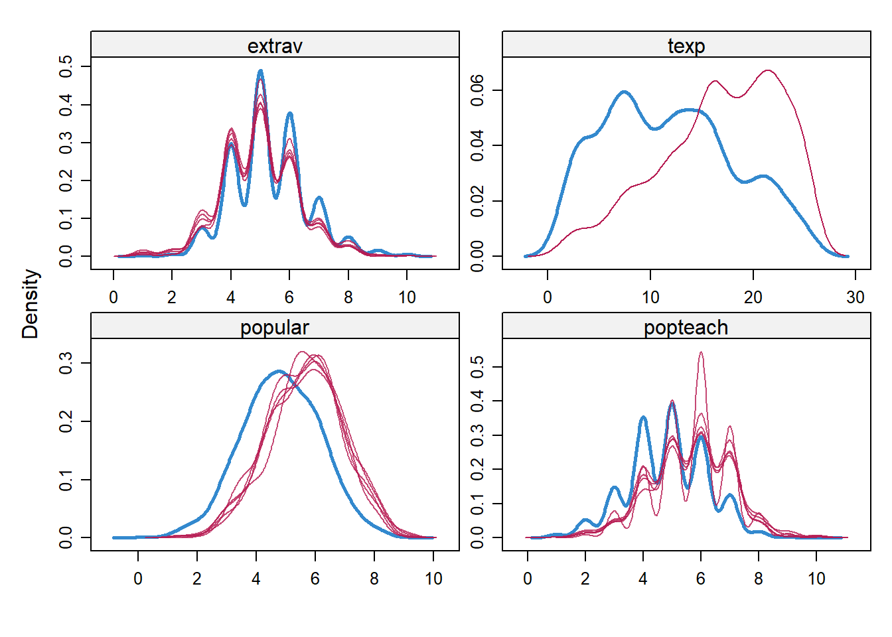
19. ICC imp4 (deferred)
See Exercise 20 for the solution.
Note: R vignette refers to exercise 20 for the full ICC table.
# ICC table deferred to step 20(not run — R vignette refers to exercise 20 for the full ICC table.)Compare to R reference
# See exercise 20 for ICC comparison with imp420. Full ICC comparison incl. orig
print(format_icc_table_r(list(ICC_VARS), {'observed': obs_icc, 'norm': imp1_icc, 'normclass': imp2_icc, 'pmm': imp4_icc, 'orig': orig_icc}))vars observed norm normclass pmm orig
1 popular 0.3280070 0.2793921 0.3531436 0.3641802 0.3629933
2 popteach 0.3138658 0.2448333 0.3394816 0.3408832 0.3414766
3 texp 1.0000000 0.4129791 1.0000000 1.0000000 1.0000000Compare to R reference
data.frame(vars = names(popNCR[c(6, 7, 5)]),
observed = c(icc(aov(popular ~ class, popNCR)),
icc(aov(popteach ~ class, popNCR)),
icc(aov(texp ~ class, popNCR))),
norm = c(icc(aov(popular ~ class, complete(imp1))),
icc(aov(popteach ~ class, complete(imp1))),
icc(aov(texp ~ class, complete(imp1)))),
normclass = c(icc(aov(popular ~ class, complete(imp2))),
icc(aov(popteach ~ class, complete(imp2))),
icc(aov(texp ~ class, complete(imp2)))),
pmm = c(icc(aov(popular ~ class, complete(imp4))),
icc(aov(popteach ~ class, complete(imp4))),
icc(aov(texp ~ class, complete(imp4)))),
orig = c(icc(aov(popular ~ as.factor(class), popular)),
icc(aov(popteach ~ as.factor(class), popular)),
icc(aov(texp ~ as.factor(class), popular))))vars observed norm normclass pmm orig
1 popular 0.3280070 0.2793921 0.3531436 0.3641802 0.3629933
2 popteach 0.3138658 0.2448333 0.3394816 0.3408832 0.3414766
3 texp 1.0000000 0.4129791 1.0000000 1.0000000 1.0000000Note: these display only the first imputed data set.
Changing the imputation method
Mice includes several imputation methods for imputing multilevel data:
2l.norm: Gibbs sampler for two-level normal outcomes with heterogeneous class variances2l.pan: Homoscedastic two-level normal via thepanpackage2lonly.mean: Class mean (or mode) imputation at level 22lonly.norm: Level-2 Bayesian normal regression (cluster aggregation)2lonly.pmm: Level-2 predictive mean matching (cluster aggregation)2logreg: Alias forlogreg(R V05 useslogreginmeth;#2logregis a predictor comment)
The latter two methods aggregate level-1 variables at level 2, but in combination with mice.impute.2l.pan, allow switching regression imputation between level 1 and level 2 as described in Yucel (2008) or Gelman and Hill (2007, p. 541). For more information on these imputation methods see the help.
21. 2l.norm on popNCR2
Note: pred/meth setup exact; 2l.norm imputed values differ (sampler moment tolerance ~0.15).
ini2 = mice(data2, column_names=names2, maxit=0)
pred5 = ini2.predictor_matrix.copy()
pred5[names2.index('popular'), :] = [0, -2, 2, 2, 2, 0, 2]
meth5 = dict(ini2.method); meth5['popular'] = '2l.norm'
imp5 = mice(data2, column_names=names2, method=meth5, predictor_matrix=pred5, m=5, maxit=5)
print(format_predictor_matrix(names2, pred5, style='popncr'))pupil class extrav sex texp popular popteach
pupil 0 1 1 1 1 1 1
class 1 0 1 1 1 1 1
extrav 1 1 0 1 1 1 1
sex 1 1 1 0 1 1 1
texp 1 1 1 1 0 1 1
popular 0 -2 2 2 2 0 2
popteach 1 1 1 1 1 1 0Compare to R reference
ini <- mice(popNCR2, maxit = 0)
pred <- ini$pred
pred["popular", ] <- c(0, -2, 2, 2, 2, 0, 2)
meth <- c("", "", "", "", "", "2l.norm", "")
imp5 <- mice(popNCR2, pred = pred, meth=meth, print = FALSE)In the predictor matrix, -2 denotes the class variable, a value 1 indicates a fixed effect and a value 2 indicates a random effect. However, the currently implemented algorithm does not handle predictors that are specified as fixed effects (type = 1). When using mice.impute.2l.norm(), the current advice is to specify all predictors as random effects (type = 2).
22. Inspect imp5 convergence
Note: Matplotlib density panel; 2l.norm curve within moment tolerance ~0.15 vs R.
plot_density(imp5, 'popular', xlim=(-1.5, 10.0), ylim=(0.0, 0.35))(plot below)Compare to R reference
densityplot(imp5, ~popular, ylim = c(0, 0.35), xlim = c(-1.5, 10))Note: PMM reference density (session chain).
plot_density(imp4, 'popular', xlim=(-1.5, 10.0), ylim=(0.0, 0.35))(plot below)Compare to R reference
densityplot(imp4, ~popular, ylim = c(0, 0.35), xlim = c(-1.5, 10))Note: Truth density from popular.csv; 2l.norm overlay within moment tolerance ~0.15.
plot_density_kde_lines(
{'truth': popular_truth, '2l.norm': complete(imp5, 1)[:, pop2_i],
'PMM': complete(imp4, 1)[:, pop_i]},
xlab='popular',
colors={'truth': 'black', '2l.norm': 'red', 'PMM': 'green'},
)(plot below)Compare to R reference
plot(density(popular$popular)) #true data
lines(density(complete(imp5)$popular), col = "red", lwd = 2) #2l.norm
lines(density(complete(imp4)$popular), col = "green", lwd = 2) #PMMNote: Convergence trace; shape matches R, not pixel-identical.
plot_mids(imp5, variables=['popular'])(plot below)Compare to R reference
plot(imp5)Note: Extended trace via continue_imputation(imp5, maxit=10).
imp5_15 = continue_imputation(imp5, maxit=10, print=False)
plot_mids(imp5_15, variables=['popular'])(plot below)Compare to R reference
imp5.b <- mice.mids(imp5, maxit = 10, print = FALSE)
plot(imp5.b)The imputations generated with 2l.norm are very similar to the ones obtained by pmm with class as a fixed effect. If we plot the first imputed dataset from imp4 and imp5 against the original (true) data we can see that the imputations are very similar. When studying the convergence we conclude that it may be wise to run additional iterations. Convergence is not apparent from this plot. After running another 10 iterations, convergence is more convincing.
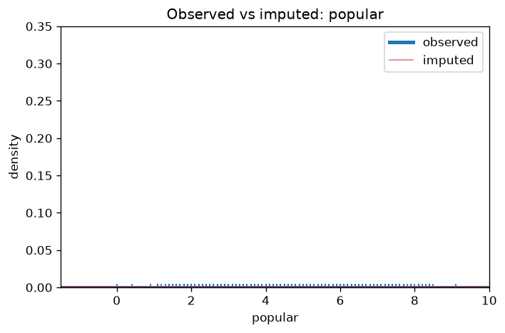
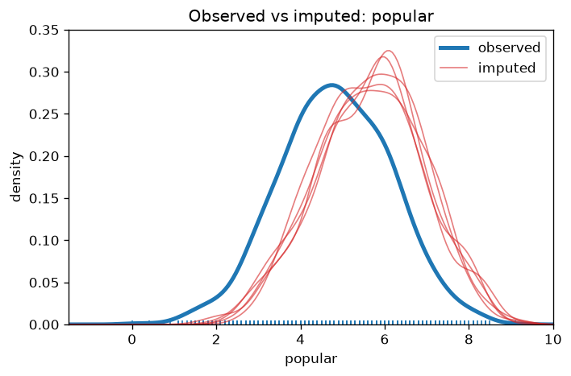
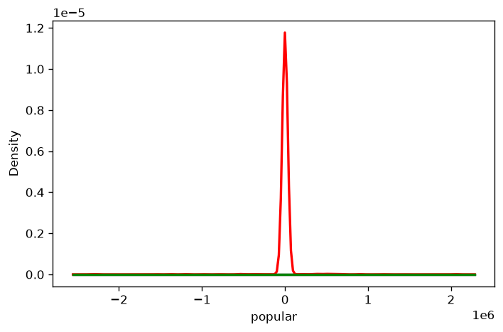
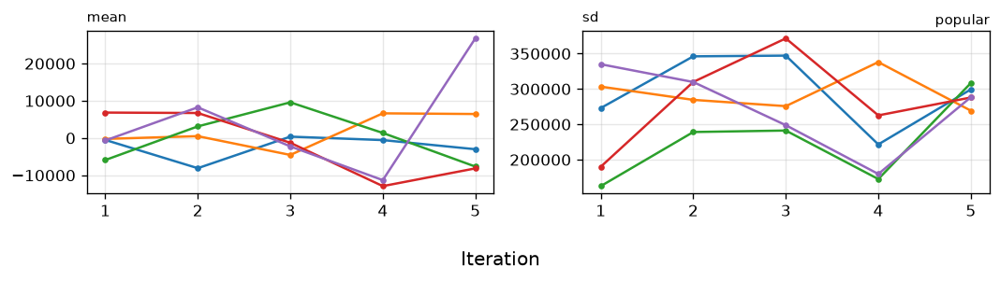
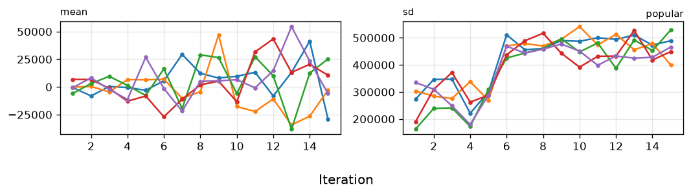
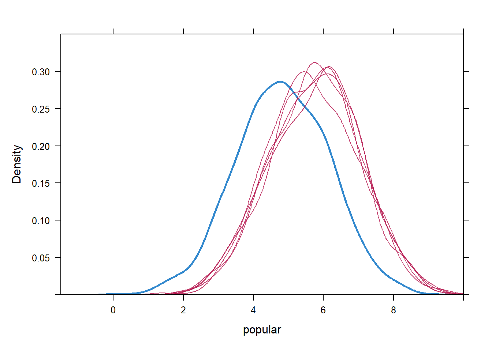

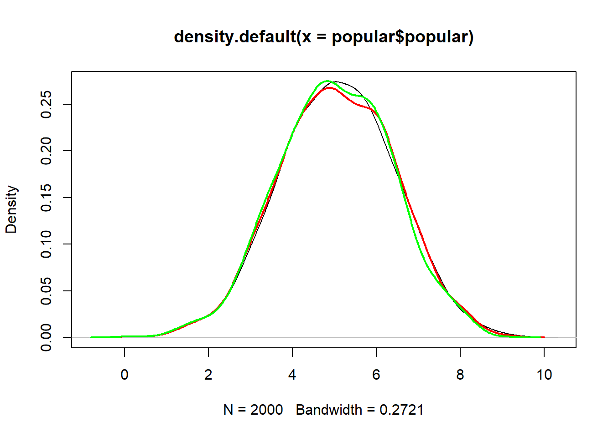
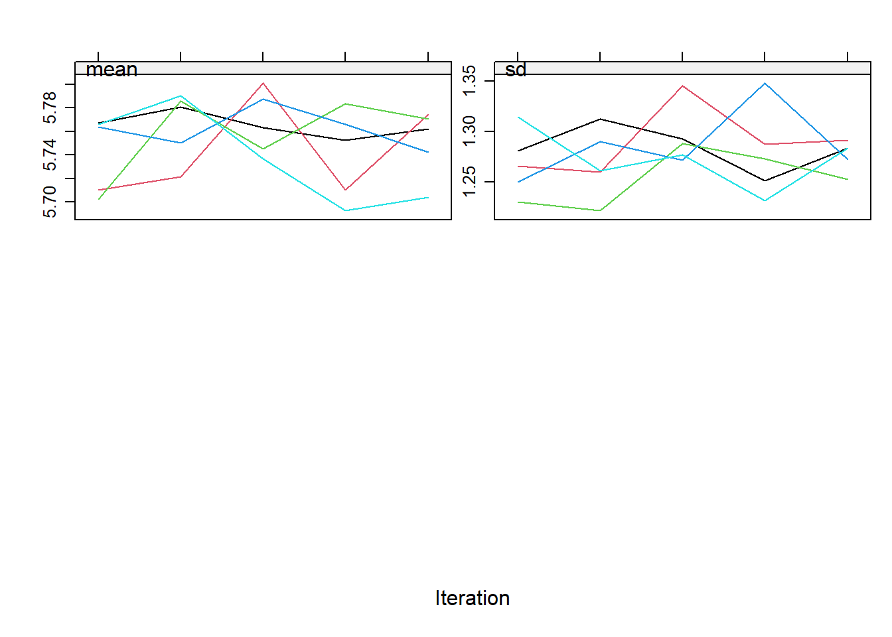
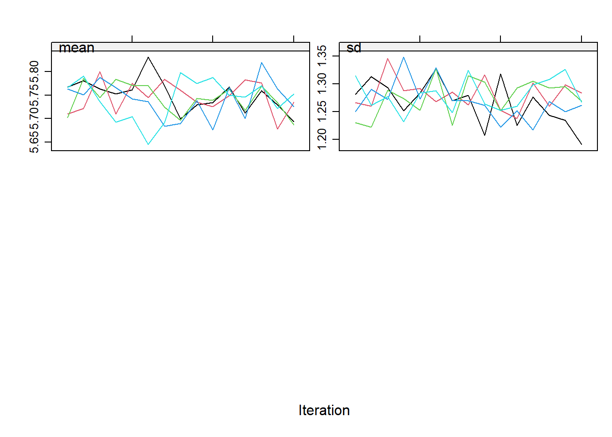
23. 2l.pan on popNCR2
Note: pred/meth setup exact; 2l.pan imputed values differ (sampler moment tolerance ~0.15).
pred6[names2.index('popular'), :] = [0, -2, 2, 2, 1, 0, 2]
meth6['popular'] = '2l.pan'
imp6 = mice(data2, column_names=names2, method=meth6, predictor_matrix=pred6, m=5, maxit=5)pupil class extrav sex texp popular popteach
pupil 0 1 1 1 1 1 1
class 1 0 1 1 1 1 1
extrav 1 1 0 1 1 1 1
sex 1 1 1 0 1 1 1
texp 1 1 1 1 0 1 1
popular 0 -2 2 2 1 0 2
popteach 1 1 1 1 1 1 0Compare to R reference
ini <- mice(popNCR2, maxit = 0)
pred <- ini$pred
pred["popular", ] <- c(0, -2, 2, 2, 1, 0, 2)
meth <- ini$meth
meth <- c("", "", "", "", "", "2l.pan", "")
imp6 <- mice(popNCR2, pred = pred, meth = meth, print = FALSE)Note: Matplotlib density panel; 2l.pan curve within moment tolerance ~0.15 vs R.
plot_density(imp6, 'popular', xlim=(-1.5, 10.0), ylim=(0.0, 0.35))(plot below)Compare to R reference
densityplot(imp6, ~popular, ylim = c(0, 0.35), xlim = c(-1.5, 10))Note: PMM reference density (session chain).
plot_density(imp4, 'popular', xlim=(-1.5, 10.0), ylim=(0.0, 0.35))(plot below)Compare to R reference
densityplot(imp4, ~popular, ylim = c(0, 0.35), xlim = c(-1.5, 10))Note: Truth density; 2l.pan overlay within moment tolerance ~0.15.
plot_density_kde_lines(
{'truth': popular_truth, '2l.pan': complete(imp6, 1)[:, pop2_i],
'PMM': complete(imp4, 1)[:, pop_i]},
xlab='popular',
title='black = truth | green = PMM | red = 2l.pan',
colors={'truth': 'black', '2l.pan': 'red', 'PMM': 'green'},
)(plot below)Compare to R reference
plot(density(popular$popular), main = "black = truth | green = PMM | red = 2l.pan") #
lines(density(complete(imp6)$popular), col = "red", lwd = 2) #2l.pan
lines(density(complete(imp4)$popular), col = "green", lwd = 2) #PMMNote: Convergence trace; shape matches R, not pixel-identical.
plot_mids(imp6, variables=['popular'])(plot below)Compare to R reference
plot(imp6)Note: R vignette extends imp5 by mistake; PyMICE correctly extends imp6.
imp6_15 = continue_imputation(imp6, maxit=10, print=False)
plot_mids(imp6_15, variables=['popular'])(plot below)Compare to R reference
imp6.b <- mice.mids(imp5, maxit = 10, print = FALSE)
plot(imp6.b)Let us create the densityplot for imp6 and compare it to the one for imp4. If we plot the first imputed dataset from both objects against the original (true) density, we can see that the imputations are very similar. When studying the convergence we conclude that it may be wise to run additional iterations. After running another 10 iterations, convergence is more convincing.
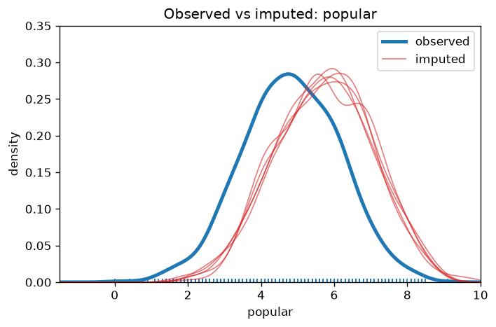
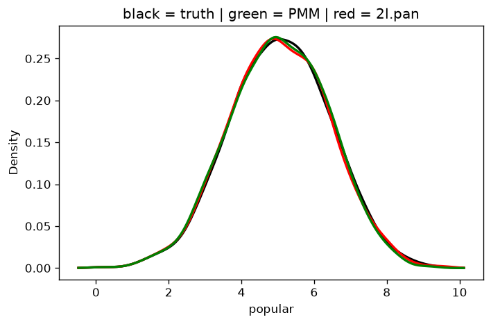
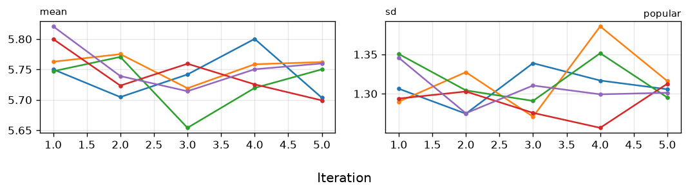
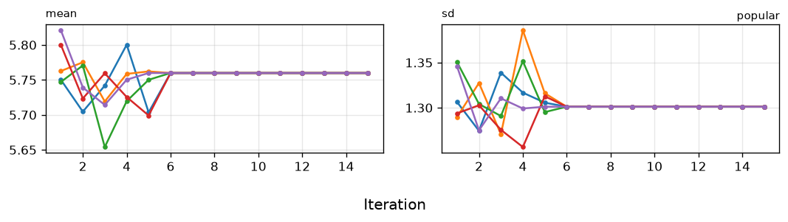
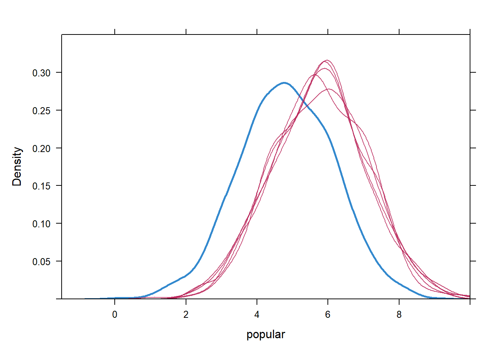
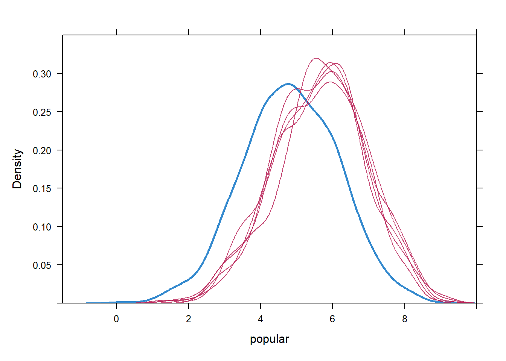
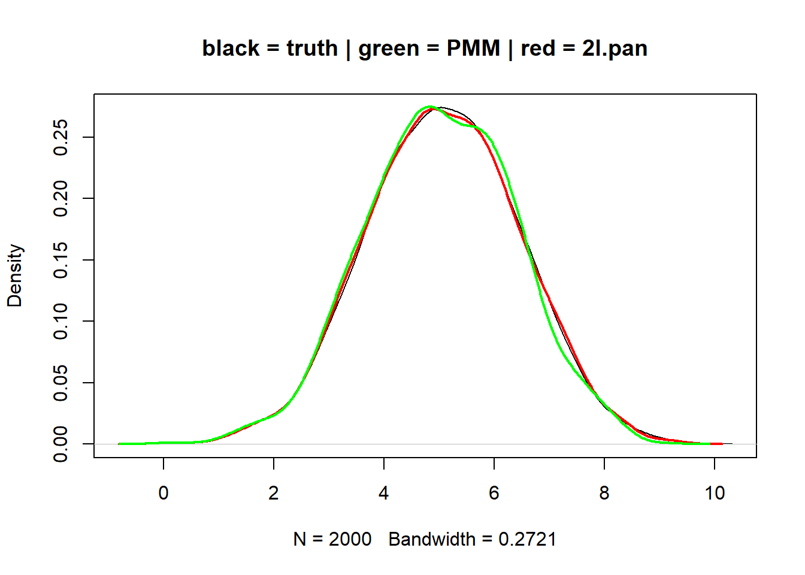
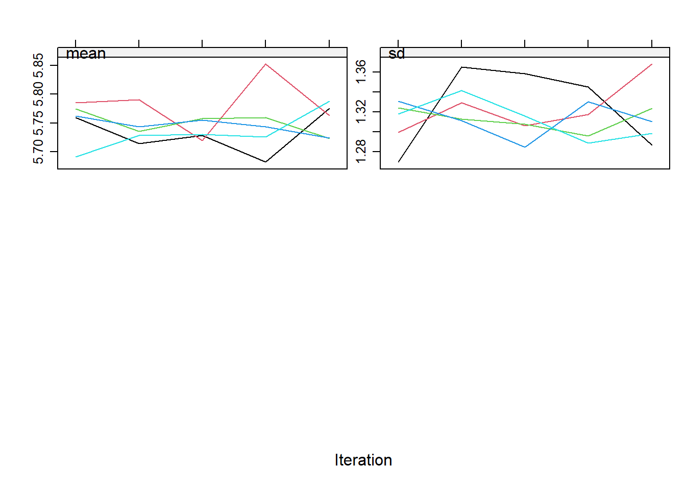

24. Mixed 2l setup on popNCR3
Note: meth/pred setup exact; multilevel imputations differ (sampler moment tolerance ~0.15).
meth7, pred7 = _popncr3_setup(ini3, names3)
imp7 = mice(data3, column_names=names3, method=meth7, predictor_matrix=pred7, m=5, maxit=5) pupil class extrav sex texp popular popteach
"" "" "2l.norm" "logreg" "2lonly.mean" "2l.pan" "2l.pan"
pupil class extrav sex texp popular popteach
pupil 0 1 1 1 1 1 1
class 1 0 1 1 1 1 1
extrav 0 -2 0 2 2 2 2
sex 0 1 1 0 1 1 1
texp 0 -2 1 1 0 1 1
popular 0 -2 2 2 1 0 2
popteach 0 -2 2 2 1 2 0Compare to R reference
ini <- mice(popNCR3, maxit = 0)
pred <- ini$pred
pred["extrav", ] <- c(0, -2, 0, 2, 2, 2, 2) #2l.norm
pred["sex", ] <- c(0, 1, 1, 0, 1, 1, 1) #2logreg
pred["texp", ] <- c(0, -2, 1, 1, 0, 1, 1) #2lonly.mean
pred["popular", ] <- c(0, -2, 2, 2, 1, 0, 2) #2l.pan
pred["popteach", ] <- c(0, -2, 2, 2, 1, 2, 0) #2l.pan
meth <- ini$meth
meth <- c("", "", "2l.norm", "logreg", "2lonly.mean", "2l.pan", "2l.pan")
imp7 <- mice(popNCR3, pred = pred, meth = meth, print = FALSE)25. Evaluate imp7
Note: Multilevel density grid; imputed marginals within moment tolerance ~0.15.
plot_density_grid(imp7)(plot below)Compare to R reference
densityplot(imp7)Note: Convergence traces for mixed 2l.norm/2l.pan/logreg/2lonly.mean setup.
plot_mids(imp7, variables=['extrav','sex','texp'])
plot_mids(imp7, variables=['popular','popteach'])(plot below)Compare to R reference
plot(imp7)Given what we know about the missingness, the imputed densities look very reasonable.
Convergence has not yet been reached. More iterations are advisable.
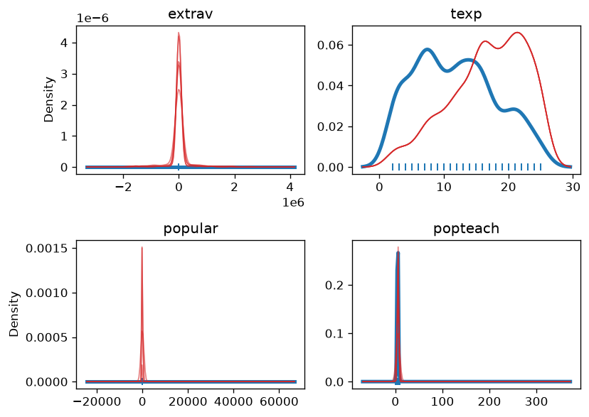
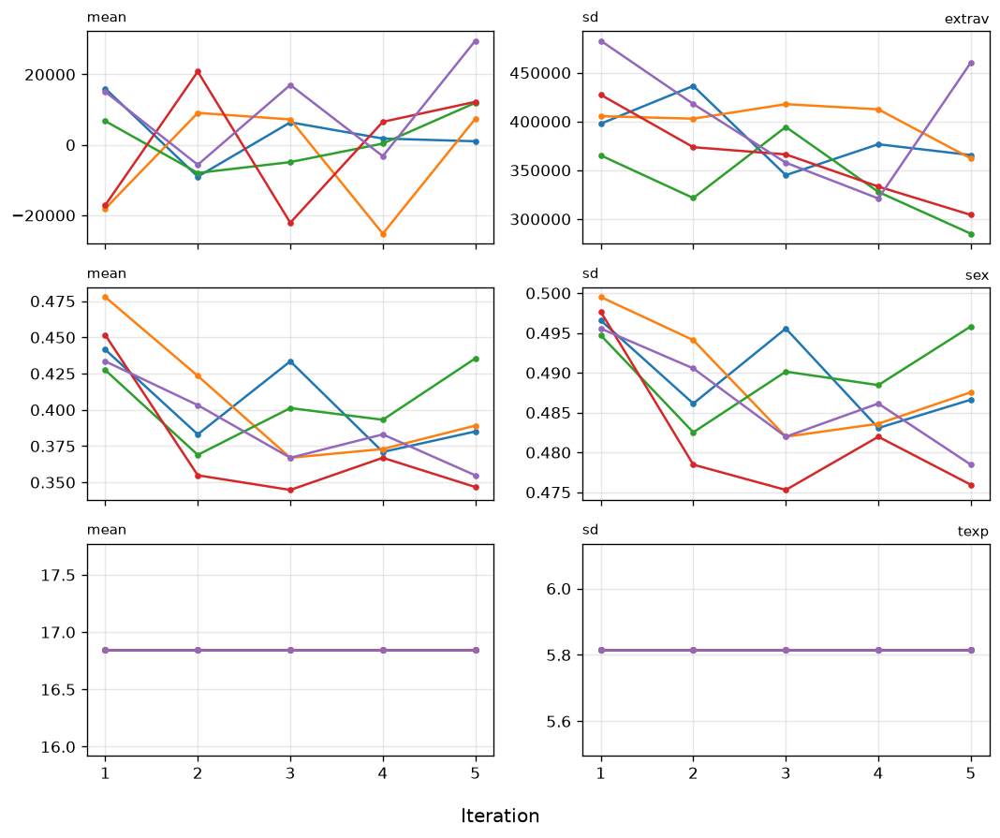
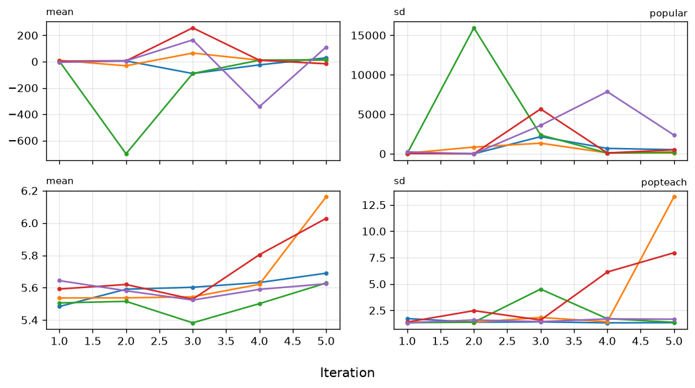
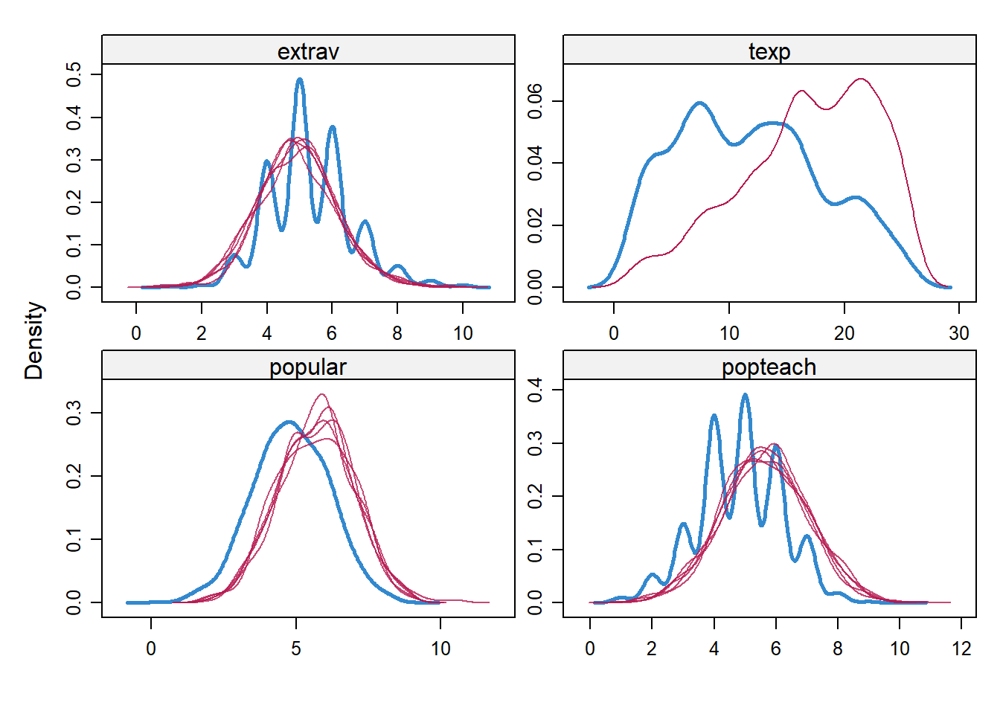
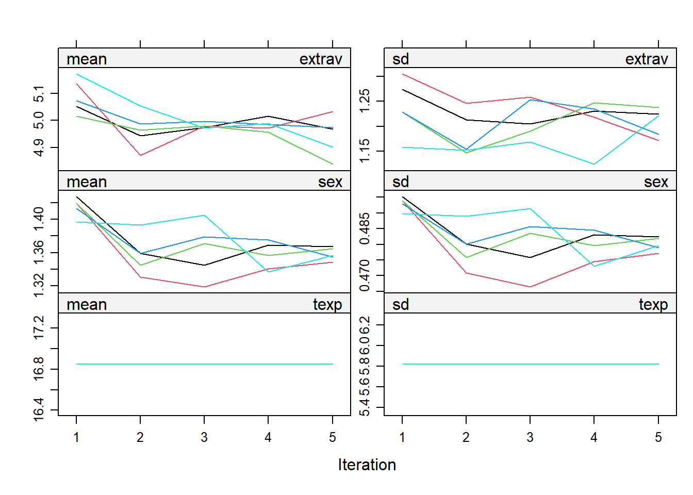
26. PMM on popNCR3
imp8 = mice(data3, column_names=names3, m=5, maxit=5, print_flag=False)
print(format_logged_events_warning_r(len(imp8.logged_events)))Warning: Number of logged events: 90Compare to R reference
pmmdata <- popNCR3
pmmdata$class <- as.factor(popNCR3$class)
imp8 <- mice(pmmdata, m = 5, print = FALSE)Warning: Number of logged events: 90With pmm, the imputations are very similar and conform to the shape of the observed data.
When looking at the convergence of pmm, more iterations are advisable:
Note: Default PMM on popNCR3; imputed marginals differ (draw-order on session chain).
plot_density_grid(imp8)(plot below)Compare to R reference
densityplot(imp8)Note: PMM convergence traces; matplotlib equivalent of R plot(imp8).
plot_mids(imp8, variables=['extrav','sex','texp'])
plot_mids(imp8, variables=['popular','popteach'])(plot below)Compare to R reference
plot(imp8)Conclusions
There are ways to ensure that imputations are not just "guesses of unobserved values". Imputations can be checked by using a standard of reasonability. We are able to check the differences between observed and imputed values, the differences between their distributions as well as the distribution of the completed data as a whole. If we do this, we can see whether imputations make sense in the context of the problem being studied.
- End of Vignette
References
Gelman, A., & Hill, J. (2006). Data analysis using regression and multilevel/hierarchical models. Cambridge University Press.
Hox, J. J., Moerbeek, M., & van de Schoot, R. (2010). Multilevel analysis: Techniques and applications. Routledge.
Yucel, R. M. (2008). Multiple imputation inference for multivariate multilevel continuous data with ignorable non-response. Philosophical Transactions of the Royal Society of London A: Mathematical, Physical and Engineering Sciences, 366(1874), 2389-2403.